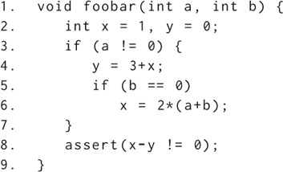
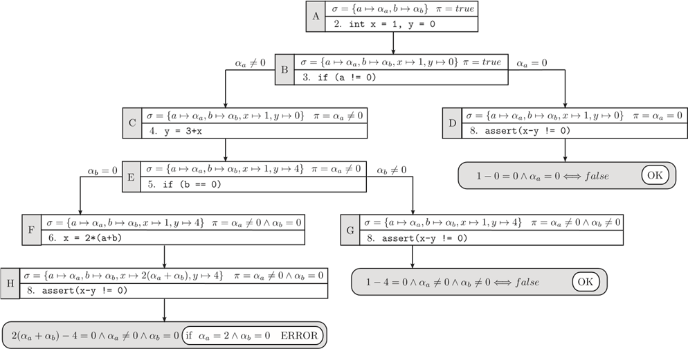
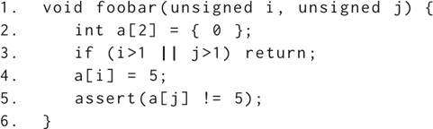
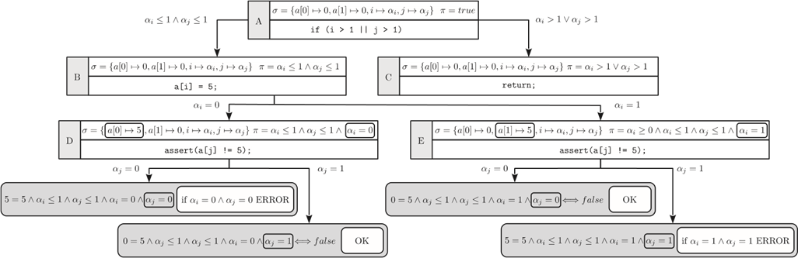
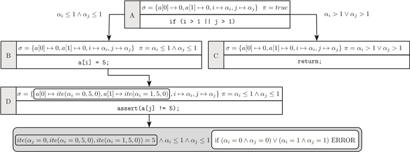
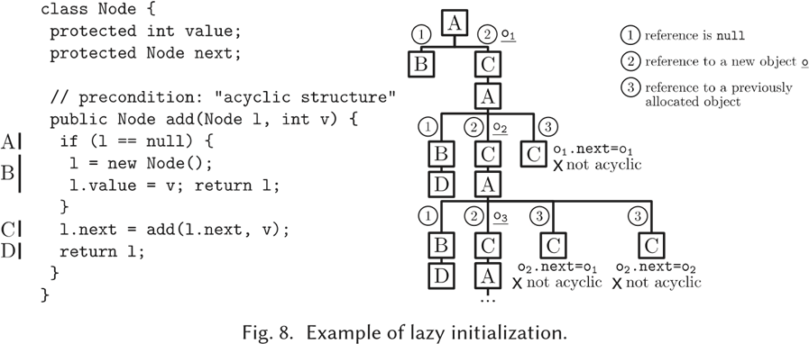
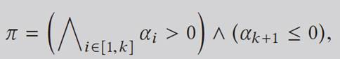
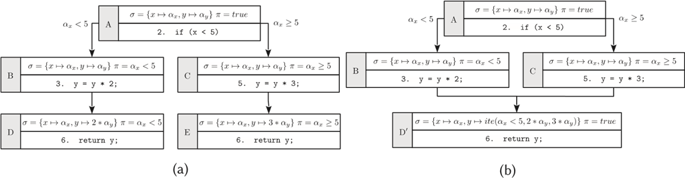

符号执行技术概述
罗伯托・巴尔多尼(ROBERTO BALDONI)，埃米里奥・科帕(EMILIO COPPA)，丹尼尔・科诺・德莱利亚(DANIELE CONO D'ELIA)+，CAMIL DEMETRESCU和IRENE FINOCCHI，罗马的萨皮恩扎大学
摘要
许多安全和软件测试应用程序需要检查程序的某些属性是否适用于任何可能的使用情况。例如，用于识别软件漏洞的工具可能需要排除任何后门，以绕过程序的身份验证。一种方法是使用不同的可能随机输入来测试程序。由于仅在非常特定的程序工作负载时才会碰到后门，因此自动探索可能的输入空间至关重要。符号执行通过系统地同时探索许多可能的执行路径而不必要求具体的输入，从而为问题提供了一种优雅的解决方案。该技术不是采用完全指定的输入值，而是抽象地将它们表示为符号，借助约束求解器来构造会导致违反属性的实际实例。在过去的四十年中，符号执行已被开发出来的数十种工具所孵化，从而在许多著名的软件可靠性应用中取得了重大的实际突破。本次调查的目的是概述该领域提出的主要思想，挑战和解决方案，并将其提炼给广大读者。
CCS概念：•软件及其工程→软件验证；软件测试与调试;
•安全和隐私→软件和应用程序安全；
其他关键字和短语：符号执行，静态分析，conconolic执行，软件测试
ACM参考格式：
Roberto Baldoni，Emilio Coppa，Daniele Cono D'Elia，Camil Demetrescu 和Irene Finocchi。2018。符号执行技术概述。ACM Compute。Surv. 51，3，Article 50(2018年5月)，39页。
https://doi.org/10.1145/3182657
这项工作得到了意大利部长会议主席和CINI（Consorzio Interuniversitario Nazionale Informatica）国家网络安全国家实验室的资助。
Authors’ addresses: R. Baldoni, E. Coppa, D. C. D’Elia,
and C. Demetrescu, Department of Computer, Control, and Management Engineering,
Sapienza University of Rome, Via Ariosto 25, 00185 Rome, Italy; emails:
{baldoni, coppa, delia, demetrescu}@diag.uniroma1.it; I. Finocchi, Department
of Computer Science, Sapienza University of Rome, Via Salaria 113, 00198 Rome,
Italy; email: finocchi@di.uniroma1.it.
只要不为牟利或商业利益而制作或分发副本，并且副本载有本通知和第一页的完整引用，则可免费提供允许将本作品的全部或部分制作为个人或教室的数字或纸质副本，以供个人或教室使用。必须尊重非ACM拥有的本作品组件的版权。允许使用信用摘要。要以其他方式复制或重新发布以发布在服务器上或重新分发到列表，需要事先获得特定的许可和/或费用。从permissions@acm.org请求权限。
©2018 ACM 0360-0300 / 2018 / 05-ART50 $ 15.00 https://doi.org/10.1145/3182657
“有时候，即使看上去很重要，您也看不到它有多重要。这可能是其中一次。”
(Cyber Grand Challenge highlights from DEF
CON 24, August 6, 2016)
引言
符号执行是70年代中期引入的一种流行的程序分析技术，用于测试某个软件是否可能侵犯某些属性[16，58，67，68]。感兴趣的方面可能是：从未执行过零除，从未解除引用NULL指针，不存在可以绕过身份验证的后门等等。通常，虽然没有自动的方法来确定某些属性(例如，间接跳转的目标)，但是启发式分析和近似分析在实践中可以在包括任务关键型和安全性应用在内的各种设置中被证明是有用的。

图1.预热示例：a和b的哪些值使断言失败？
在具体执行中，程序在特定的输入上运行，并探索单个控制流路径。因此，在大多数情况下，具体执行只能低于对所关注属性的分析。相反，符号执行可以同时探索程序在不同输入下可以采用的多个路径。这为进行合理的分析铺平了道路，可以为被检查的属性提供强有力的保证。关键思想是允许程序采用符号输入值，而不是具体的输入值。执行是由符号执行引擎执行的，该引擎为每个探索的控制流路径维护：(i)一阶布尔公式，描述沿该路径采取的分支所满足的条件，以及(ii)将变量映射到符号表达式或值的符号内存存储器。分支执行将更新公式，而赋值将更新符号存储。一个典型的基于可满足性模理论(SMT)求解器[13]的模型检查器，最终用来验证沿着每个探索路径是否存在任何违反属性的情况，以及该路径本身是否是可实现的，即，如果其公式是否可以通过为程序的符号参数分配一些具体的值来满足。
自2013年DARPA宣布“网络大挑战”（Cyber Grand Challenge）以来，符号执行技术已经引起了不同领域观众的注意，这是一项为期两年的竞赛，旨在创建用于近乎实时漏洞检测、利用和修补的自动系统[95]。更值得注意的是，自2008年以来，符号执行工具在许多微软应用程序的测试过程中一直全天候运行，例如，在Windows7开发过程中，通过文件模糊测试发现的所有错误中，有近30%是其他程序分析和黑盒测试技术漏掉的[53]。
在本文中，我们调查了符号执行的主要方面，并讨论了在软件测试和计算机安全应用中采用的最杰出的技术。我们的讨论主要集中在正向符号执行上，其中符号引擎同时分析许多路径，并从程序的主要入口点开始对其进行探索。
我们从一个简单的示例开始，该示例突出了本文其余部分中讨论的许多基本问题。
热身的例子
考虑图1的C代码，并假设我们的目标是确定哪些输入使函数foobar的第8行的assert失败。由于每个4字节输入参数最多可以包含232不同的整数值，因此在随机生成的输入上运行具体函数foobar的方法将不太可能准确地获取断言失败的输入。通过使用符号而不是具体的值作为输入来评估代码，符号执行克服了此限制，并使推理输入类而不是单个输入值成为可能。
更详细地说，不能由代码的静态分析确定每个值，诸如函数的实际参数或从流中读取数据的系统调用的结果，都由符号αi表示。在任何时候，符号执行引擎都会维护以下状态(stmt, σ, π)：

图2. 图1中给出的函数foobar的符号执行树。每个执行状态(用大写字母标记)显示要执行的语句，符号存储σ和路径约束π。根据assert语句中的条件评估叶子。
•stmt是要评估的下一条语句。目前，我们假设stmt可以是赋值，条件分支或跳转(第5节将讨论更复杂的构造，如函数调用和循环)。
•σ是一个象征性的存储，与在具体的值或符号值或者表达式相关联的程序变量αi。
•π表示路径约束，即表示符号αi的一组假设的公式，由于在执行过程采取分支以到达stmt语句。在分析开始时，π=true。
根据stmt，符号引擎将状态更改如下：
• 赋值x=e的计算通过将x与新的符号表达式es相关联来更新符号存储σ。我们用x→es表示这种关联，其中es是通过在当前执行状态上下文中计算e获得的，并且可以是涉及符号和具体值上的一元运算符或二进制运算符的任何表达式。
•
条件分支ife then strue else sfalse的计算影响路径约束π。符号执行通过创建两个具有路径约束πtrue和πfalse执行状态来分叉，其中πtrue和πfalse分别对应于两个分支：πtrue=π∧es和πfalse=π∧¬es，其中es是通过计算e获得的符号表达式。符号执行在两种状态下独立进行。
• 跳转goto s的求值通过将符号执行推进到语句s来更新执行状态。
函数foobar的符号执行，可以有效地表示为树，如图2所示。最初(执行状态A)，路径约束为true，并且输入参数a和b与符号值关联。在第2行初始化局部变量x和y之后，通过将x和y分别与具体值1和0(执行状态B)相关联来更新符号存储。第3行包含条件分支并且执行是分叉的：取决于所采取的分支，接下来计算不同的语句并对符号αa做出不同的假设(分别是执行状态C和D)。在分支αa≠0上，变量y分配给x+3，在状态E获得y →4，因为在状态C下X→1。通常，算术表达式求值仅操作符号值。在扩展每个执行状态直到在所有分支到达第8行的assert语句之后，我们可以检查参数a和b的哪些输入值会使断言assert失败。通过分析执行状态{D，G，H}，我们可以得出结论，只有H可以使x-y=0为真。此时H的路径约束隐含的定义对foobar不安全的输入集。特别是，任何输入值例如
将使断言assert失败。最终可以通过调用SMT求解器[13]来求解路径约束来确定不安全输入参数的实例，在此示例中，路径约束将产生a=2和b=0。
符号执行中的挑战
在第1.1节讨论的示例中，符号执行可以识别使断言失败的所有可能的不安全输入。这是通过详尽探索可能的执行状态来实现的。从理论上讲，穷举符号执行为任何可判定的分析提供了完善而完整的方法。健全性可以防止误报(假阴性，漏报)，即，确保找到所有可能的不安全输入，而完整性则可以防止误报(假阳性，误报)，即，认为不安全的输入值实际上是不安全的。正如我们将在后面讨论的那样，穷举符号执行不可能扩展到小型应用程序之外。因此，在实践中，我们通常会实现一些雄心勃勃的目标，例如，通过以稳健性换取效益。
处理实际代码时，符号执行所面临的挑战可能比我们的热身示例中说明的挑战要复杂得多。自然会产生一些观察和问题：
• 内存：符号引擎如何处理指针，数组或其他复杂对象？代码操作指针和数据结构不仅会产生符号存储的数据，还会产生由符号表达式描述的地址。
• 环境：引擎如何处理整个软件堆栈中的交互？调用库和系统代码可能会产生副作用，例如，文件的创建或对用户代码的调用，这些可能会在以后影响执行，因此必须加以考虑。但是，评估任何可能的交互结果可能都不可行的。
• 状态空间爆炸：符号执行如何处理路径爆炸？语言构造(例如循环)可能成倍增加执行状态的数量。因此，符号执行引擎不可能在合理的时间内穷举地探索所有可能的状态。
• 约束求解：约束求解器在实践中可以做什么？SMT求解器可以扩展到数百个变量的约束的复杂组合。然而，诸如非线性运算的构造对效率构成了主要障碍。
根据使用符号执行的特定上下文，可以做出不同的选择和假设来解决上面突出显示的问题。尽管这些选择通常会影响健全性或完整性，但在几种情况下，对可能的执行状态空间的部分探索可能足以在有限的时间预算内实现目标(例如，为应用程序确定崩溃的输入)。

图3.具体的和抽象的执行机模型。
相关工作
符号执行一直是众多研究的焦点。截至2017年8月，Google学术搜索报告了742条文章，在标题中包含准确的短语“符号执行”。在此调查之前，其他作者对此领域进行了技术概述，例如参考文献[79]和[22]。参考文献[28]侧重于自动测试生成的更具体的设置：它提供了文献的全面视图，深入涵盖了各种技术，并通过大量运行示例对技术讨论进行了补充。
文章的组织
本文的其余部分安排如下。在第2节中，我们讨论符号执行引擎的总体原理和评估策略。第3节至第6节解决了我们在第1.2节中列出的主要挑战，而第7节讨论了如何将其他领域的最新进展应用于增强符号执行技术。结束语在第8节中讨论。
符号执行引擎
在本节中，我们描述了符号执行器设计的一些重要原则，以及在执行过程中出现的关键权衡。从具体的和符号运行的概念出发，我们还介绍了concolic执行的概念。
混合符号和具体执行
如预热示例(第1.1 节)所示，从理论上讲，程序的符号执行可以生成程序在特定输入上具体执行期间可能采取的所有可能的控制流路径。虽然对所有可能的运行进行建模可以进行非常有趣的分析，但实际上在实践中通常是不可行的，尤其是在实际软件上。
经典符号执行的主要局限性在于它无法探索可行的执行，从而导致无法处理的路径约束[22]。健全性的损失源于执行者无法追踪的外部代码，以及涉及例如非线性运算或超越函数的复杂约束。由于花费在约束解决上的时间是引擎的主要性能障碍，因此可以从绝对意义上考虑可解性，但同时也要提高效率。而且，实际的程序通常也不是独立的：实现能够静态分析整个软件堆栈的符号引擎可能非常具有挑战性，因为在执行过程中难以准确评估任何可能的副作用。解决这些问题并使符号执行在实践中切实可行的一个基本思想是将具体执行和符号执行相结合：这被称为concolic执行，其中术语concolic是“concrete”和“symbolic”的一个混成词(图3)。已从不同角度探讨了这一通用原理，这将在本节的其余部分中讨论。
动态符号执行。一种流行的concolic执行方法，称为动态符号执行(DSE)或动态测试生成[51]，是使用具体的执行驱动符号执行。此技术在缓解上述问题方面可能非常有效。除了符号存储和路径约束，执行引擎维护具体的存储σc。选择任意输入开始后，它会通过同时更新两个存储和路径约束来具体和符号地执行程序。每当具体执行采用分支时，符号执行都将指向同一分支，并且将从分支条件中提取的约束添加到当前路径约束集中。简而言之，符号执行由特定的具体执行驱动。结果，符号引擎不需要调用约束求解器来确定分支条件是否(不)满足：这由具体执行直接测试。为了探索不同的路径，可以否定一个或多个分支给出的路径条件，并调用SMT求解器为新约束找到令人满意的赋值，即生成新输入。可以根据需要重复执行此策略，以达到所需的覆盖范围。
|
例子。考虑图1中的C函数，假设选择a=1和b=1作为输入参数。在这些条件下，具体的执行路径是图2的符号树中的A~B~C~E~G。除了图2所示的符号存储之外，在遍历状态中维护的具体存储如下： − σc=
{a → 1, b → 1} in state A; − σc=
{a → 1, b → 1, x → 1, y → 0} in states B and C; − σc= {a → 1, b → 1, x → 1, y → 4} in states E
and G 在检查完第8行的断言条件是否成功之后，我们可以通过否定最后一个路径约束(即0)来生成新的控制流路径。此时，求解器将生成满足约束0(例如a=1和b=0)，执行将以类似的方式沿路径A继续。 |
尽管DSE使用具体的输入将符号执行驱动到特定的路径，但是每当需要探索新路径时，它仍然需要选择一个分支来求反。还要注意，每个具体执行都可能会添加必须访问的新分支。由于所有执行的具体执行中的未采取分支的集合可能非常大，因此采用有效的搜索启发法(第2.2 节)可以发挥至关重要的作用。例如，DART[51]使用深度优先策略选择下一个要取反的分支。文献中已经提出了选择下一个分支取反的其他策略。例如，SAGE[52]的迭代搜索系统地部分地探索了状态空间，从而最大化了生成的新测试的数量，同时还避免了搜索中的冗余。这可以通过取消遵循特定顺序的约束并限制搜索算法的回溯来实现。由于仅部分探索状态空间，因此初始输入在整个方法的有效性中起着至关重要的作用。第一次输入的重要性与传统黑盒模糊测试相似。因此，诸如SAGE之类的符号引擎通常被称为白盒模糊测试器。
引擎可以利用在具体运行期间维护的符号信息来获取新的输入并探索新的路径。下一个示例显示DSE如何处理对由Concolic引擎未进行符号跟踪的外部代码的调用。在第6节中将讨论使用具体值来辅助约束求解。
例。考虑图4 (a)中的函数foo，并假设concolic引擎未对bar进行符号跟踪(例如，它可以由第三方组件提供，以其他语言编写或按照黑盒方法进行分析) 。假设随机选择x = 1和y = 2作为初始输入参数，则调解引擎执行bar(返回a = 0)并跳过将触发错误语句的分支。与此同时，符号执行跟踪路径约束αý≥ 0内部函数foo。请注意，引擎不知道功能栏中的分支条件。为了探索替代路径，引擎取消了foo中分支的路径约束，生成了输入(例如x = 1和y = − 4)，这些输入实际上将具体执行推向了替代路径。通过这种方法，即使没有符号跟踪bar，引擎也可以在foo中探索两条路径。
图4 (b)显示了先前代码的一个变体，其中函数qux(与foo不同)采用单个输入参数，但在分支条件下检查bar的结果。尽管引擎可以在qux 内测试的分支条件下跟踪路径约束，但不能保证会生成能够将执行驱动到替代路径的输入：conolicolic引擎不知道a 和x 之间的关系，例如条没有被符号跟踪。在这种情况下，引擎可以使用其他随机输入重新运行代码，但最终它可能无法在qux中探索一条有趣的路径。
图4 (c)提出了一个相关问题。当为预测路径生成的输入将执行带到不同路径时，我们观察到路径分歧。通常，这可能是由于未跟踪符号传播，导致不正确的路径约束或由于对引擎中某些(例如按位，浮点)操作进行建模时的不精确性。在示例中，函数baz 调用外部函数abs，该函数通过为其分配绝对值来对x 产生副作用。选择X = 1作为初始值混凝土，混凝土执行不触发错误语句，但该concolic引擎跟踪的路径约束α X ≥ 0由于在分支巴兹，试图通过否定它来生成一个新的输入。但是，由于abs的(未跟踪)副作用，新输入(例如x = − 1)不会触发错误语句。有趣的是，引擎无法检测到没有输入可以实际触发错误。

图4.一致执行：(a)测试foo功能，即使引擎无法符号跟踪bar，(b)假否定示例，(c)路径发散示例，abs删除符号＆x处的整数。
如该示例所示，假阴性(即，丢失的路径)和路径差异是动态符号执行的显着缺点。DSE为性能和实现工作而换来了稳健性：否定的可能性是可能的，因为可能会遗漏某些程序执行(因此可能有错误行为)，从而导致完整但近似的形式的程序分析。文献中经常观察到路径分歧：例如，参考文献[52]报告的比率超过60％。参考文献[27]对路径发散进行了实证研究，分析了造成这种现象的主要模式。外部调用，异常，类型强制转换和符号指针被明确定位为协调执行的关键方面，必须由引擎仔细处理以减少路径分歧的数量。
选择性符号执行。S 2 E [29]采用了一种不同的方法来混合符号执行和具体执行，这是基于以下观察：一个人可能只想全面浏览软件堆栈的某些组件，而不关心其他组件。选择性符号执行会仔细地交织具体的符号执行，同时使整体探索有意义。
假设函数A调用了函数B，并且执行模式在调用站点处发生了变化。出现两种情况：(1)从具体到符号再到后面：将B的参数设为符号，并对B进行完整的符号探讨。B也被具体执行，其具体结果返回给A。之后，A继续具体执行。(2)从符号到具体，再到后面：B 的参数具体化，B的具体执行，并且符号化在A中恢复执行。这可能会影响分析的正确性和完整性：(i )完整性：确保符号性执行会跳过由于执行具体化而可能无法实现的任何路径(可能导致误报)，S 2 E收集路径约束，以跟踪参数如何具体化，B产生了哪些副作用以及它的返回值生产。(ii)健全性：恢复A后，具体化可能会导致分支丢失(可能导致假阴性)。为了解决这个问题，将收集到的约束标记为soft ：只要通过soft约束使返回A的分支不起作用，就会执行回溯并尝试为B选择不同的参数。为了指导B参数的重新具体化，S 2 E还在B的具体执行期间收集分支条件，并选择具体的值，以便它们在B中启用不同的具体执行路径。
路径选择
由于枚举程序的所有路径可能会非常昂贵，因此在许多与测试和调试相关的软件工程活动中，首先要通过寻找最有希望的路径来优先进行搜索。在选择下一条要探索的路径的几种策略中，我们现在简要概述一些最有效的策略。我们注意到，路径选择启发式方法通常是经过量身定制的，以帮助符号引擎实现特定目标(例如，溢出检测)。寻找一种普遍最优的策略仍然是一个悬而未决的问题。
最常见的策略是深度优先搜索(DFS)，它会在回溯到最深的未探索分支之前尽可能地扩展路径，而宽度优先搜索(BFS)，则是并行扩展所有路径。当内存使用率非常高时，通常会采用DFS，但由于包含循环和递归调用的路径而妨碍了DFS。因此，尽管存在更高的内存压力和完成特定路径探索所需的时间，但某些工具还是采用BFS，这使引擎能够快速探索各种路径以及早发现有趣的行为。另一种流行的策略是随机路径选择，它已在多种变体中进行了改进。例如，KLEE [20]根据路径的长度和分支稀疏度将概率分配给路径：它倾向于探索次数较少的路径，从而防止了由循环和其他路径爆炸因素引起的饥饿。
诸如EXE [21]，KLEE [20]，Mayhem [25]和S 2 E [29]等几篇著作都讨论了旨在最大化代码覆盖率的启发式方法。例如，在KLEE [20]中讨论的覆盖优化搜索为每个状态计算权重，该权重随后用于随机选择状态。通过考虑最近的未发现指令有多远，该状态最近是否覆盖了新代码以及该状态的调用堆栈来获得权重。在参考文献[71]中提出的启发式方法也具有类似的风格，称为子路径引导搜索，它尝试通过选择控制流图的子路径来探索程序中行进较少的部分，而子路径的探索次数较少。这是通过维持探查子路径的频率分布来实现的，其中子路径被定义为距离完整路径长度为n 的连续子序列。有趣的是，值n 对于使用这种试探法的符号引擎实现的代码覆盖率起着至关重要的作用，并且没有特定的值被证明是普遍最优的。最短距离符号执行[72]并非针对覆盖范围，而是旨在标识触发程序中特定点执行的程序输入。但是，与基于覆盖率的策略一样，启发式方法是基于评估距目标点最短距离的度量。将其计算为过程间控制流程图中最短路径的长度，并且引擎会优先确定距离最短的路径。
其他搜索启发式方法尝试根据可能的目标对可能导致状态感兴趣的路径进行优先级排序。例如，AEG [8]介绍了两种这样的策略。该马车路径第1 的策略选取的路径，其过去的状态已经包含小但不可利用的bug。直觉是，如果路径包含一些小错误，则很可能尚未对其进行正确的测试。因此，将来的状态很有可能会包含有趣的，希望可以被利用的错误。同样，循环耗尽策略探索访问循环的路径。这种方法的灵感来自于实践观察，即循环中常见的编程错误可能会导致缓冲区溢出或其他与内存相关的错误。为了找到可利用的错误，Mayhem [25]优先考虑了路径，在路径中标识了对符号地址的内存访问或检测到符号指令指针。
参考文献[118]提出了一种动态符号执行的新颖方法，以自动找到满足常规属性(即可由有限状态机(FSM)表示的属性(例如文件使用或内存安全性))的程序路径。动态符号执行由FSM指导，因此首先探索最可能满足该属性的执行路径分支。该方法利用静态和动态分析来计算要选择的探索路径的优先级：在符号执行期间动态地计算当前执行路径已经到达的FSM状态，而反向数据流分析用于计算未来是静态的。如果这两个集合的交集是非空的，则可能存在满足该属性的路径。
适应度功能已广泛用于基于搜索的测试生成[76]。适应度函数可衡量探索路径接近目标测试覆盖率的程度。几篇著作，例如参考文献[22]和[112]，已在符号执行的上下文中应用了此思想。例如，参考文献[112]引入了fitnex，这是一种在策略执行中翻转分支的策略，它优先考虑可能更接近采用特定分支的路径。更详细地说，给定目标分支，其条件形式为| a − c | == 0，路径的接近度计算为| a
− c
| 通过利用该路径中变量a 和c 的具体值。可以为其他种类的分支条件计算相似的适应性值。分支的适用性最低的路径由符号引擎选择。尚未到达分支的路径将获得最坏情况的适用性值。
符号向后执行
符号向后执行(SBE)[26，40]是符号执行的一个变型，其中来自目标点的探索进行到程序的入口点。因此，与规范(正向)符号执行相比，分析是在相反的方向上进行的。这种方法的主要目的通常是确定可以触发特定代码行(例如，断言或throw语句)执行的测试输入实例。对于开发人员在程序上进行调试或回归测试时，这可能非常有用。当探索从目标开始时，沿着遍历过程中遇到的分支收集路径约束。SBE引擎可以一次探索多个路径，并且类似于转发符号执行，会定期检查路径的可行性。当证明路径条件不满足时，引擎将放弃路径并回溯。
参考文献[72]讨论了SBE的一种变体，称为呼叫链后向符号执行(CCBSE)。该技术从确定目标线所在的函数中的有效路径开始。找到路径后，引擎将移至包含目标点的函数的调用者之一，并尝试重建从调用者的入口点到目标点的有效路径。递归地重复该过程，直到重构了程序主要功能的有效路径为止。与传统SBE的主要区别在于，尽管CCBSE从目标点向后跟踪调用链，但在每个函数内部都按传统符号执行方式进行了探索。
SBE和CCBSE中反向探索的关键要求是过程间控制流程图的可用性，该过程图提供了整个程序的控制流程，并可以确定功能的调用位置。参与探索。不幸的是，在实践中构造这样的图可能非常具有挑战性。此外，函数可以有许多可能的调用点，使得所进行的探索一个SBE还是非常昂贵的。另一方面，当在相反方向上收集约束时，可能会产生一些实际的优势。我们将在第6 节中进一步讨论这些好处。
符号执行器的设计原理
参考文献[25]中总结了符号执行引擎应遵循的许多与性能相关的设计原则。最为显着地：
(1)进展：执行者应能够在不超出给定资源的情况下进行任意长时间。由于不同控制流的数量可能巨大，因此内存消耗可能特别重要。
(2)工作重复：不应重复执行工作，避免从一开始就多次重启程序来分析可能具有共同前缀的不同路径。
(3)分析重用：应尽可能重用以前运行的分析结果。特别是，应该避免在先前求解的路径约束上对SMT求解器进行昂贵的调用。
由于要分析的执行状态空间很大，因此不同的符号引擎已在例如运行时间和内存消耗或性能和分析的完整性/完整性之间进行了权衡取舍。
试图在单次运行中同时执行多个路径的符号执行程序(也称为联机)在每个与输入相关的分支上克隆执行状态。实例在KLEE [20]，AEG [8]和S 2 E [29]中给出。这些引擎从不重新执行先前的指令，从而避免了重复工作。但是，许多活动状态需要保留在内存中，并且内存消耗可能很大，可能会阻碍进度。减少内存占用的有效技术包括写时复制，它试图在不同状态之间尽可能多地共享[20]。另一个问题是，并行执行多个路径需要确保执行状态之间的隔离，例如，通过模拟系统调用的效果来保持OS的不同状态。
推理在一个时间的单个路径，如在concolic执行，是通过这样采取的方法- 称为离线执行人，如SAGE
[52]。相对于在线执行程序，独立运行每个路径会降低内存消耗，并能够立即重用先前运行的分析结果。另一方面，可以大大重复工作，因为每次运行通常都会从头开始重新启动程序的执行。在脱机执行程序的典型实现中，运行是具体的，并且需要输入种子：首先具体执行程序，记录指令跟踪，然后象征性地执行记录的跟踪。诸如Mayhem [25]之类的混合执行器试图在速度和内存需求之间取得平衡：当内存使用或并发活动状态的数量达到阈值时，它们以联机模式启动并生成检查点，而不是派生新的执行器。检查点维护符号执行状态和重播信息。选择检查点进行还原后，将从已还原的具体状态恢复在线浏览。
内存模型
我们在第1.1 节中的预热示例提供了一种简化的内存模型，其中数据仅存储在标量变量中，没有间接寻址。符号执行的一个关键方面是如何对内存建模，以支持带有指针和数组的程序。这需要通过不仅将变量映射，而且将内存地址映射到符号表达式或具体值来扩展我们的内存存储概念。通常，可以将显式模拟内存地址的存储区σ 视为将内存地址(索引)与具体值或符号值上的表达式相关联的映射。我们仍然可以通过使用变量的地址而不是映射中的名称来支持变量。下面，当我们为变量x 和表达式e 书写x → e时，我们的意思是＆x → e，其中＆x 是变量x 的具体地址。同样，如果v 是一个数组并且c 是一个整数常量，则通过v [c]→ e，我们表示＆v + c → e 。

图5.内存建模示例：i 和j的哪些值使断言失败？

图6.图5 的示例通过状态分支的完全符号存储。
内存模型是符号引擎的重要设计选择，因为它会显着影响探索和约束解决方案的可伸缩性[22]。在象征性的存储器地址的问题[89 时在操作中引用的地址是一个符号表达式]出现。在本节的其余部分，我们将讨论许多流行的解决方案。
完全符号记忆
在最高通用级别上，引擎可以将内存地址视为完全符号化的。这是许多工作(例如BitBlaze [98]，[102]，BAP [17]和[103])所采用的方法。金在开创性的文章[68]中开创了两种基本方法：
• 国家分叉。如果操作从符号地址读取或写入符号地址，则通过考虑该操作可能导致的所有可能状态来分叉该状态。路径约束将针对每个分叉状态进行相应更新。
例。考虑图5 所示的代码。在管线4中的写操作会影响任一个[0]或一个[1]，这取决于数组索引的未知值我。状态分叉在执行内存分配以显式考虑两种可能的情况后会创建两个状态(图6 )。分叉状态的路径约束编码对i 的值所作的假设。类似地，存储器在第5行读操作的[j]的可访问任一个[0]或一个[1]，这取决于数组索引的未知值Ĵ 。因此，对于赋值a [i]= 5 的两个可能结果中的每一个，都有断言的两个可能结果，可以通过分叉相应的状态来明确探究它们。

图7.通过if-then-else公式的全符号存储，用于图5 的示例。
• if-then-else公式。一种替代方法包括将符号指针的可能值的不确定性编码到保存在符号存储区和路径约束中的表达式中，而不会产生任何新状态。关键思想是利用某些求解器对包含ite (c，t，f )形式的if-then-else表达式的公式进行推理的能力，如果c为真，则生成t，否则为f。对于内存读取和写入操作，此方法的工作方式有所不同。令α 为符号地址，其可以假定具体值a 1，a 2，...。。：
-从α 读取得到表达式ite (α = a 1，σ (a 1 )，ite (α = a 2，σ (a 2 )，.... ))；
- 在α 处书写表达式e会更新a 1，a 2，... 的符号存储。。。作为σ (a i )← ite
(α = a i，e，σ (a i ))。
请注意，在这两种情况下，存储操作都会在存储中引入与所访问符号地址可能假定的可能值数量一样多的ite 表达式。例如，在Angr [95](第3.3 节)中使用了符号存储的ite 方法。
例。再次考虑图5 所示的示例。而不是操作的后分叉的状态[我] = 5在第4行，如果-则-否则方法通过编码分配的两个可能的结果，即，更新所述存储器存储一个[0] → ITE (α 我= 0,5，0)和一[1] → ITE (α 我= 1,5，0)(图7 )。类似地，而不是创建用于[j]的第5行中的每个可能的不同地址的新的状态，在不确定性Ĵ 在单个表达编码ITE (α Ĵ = 0，σ (一个[0])，σ (一[1]))= ITE (α Ĵ = 0，ITE (α 我= 0,5，0)，ITE (α 我= 1,5，0))。
广泛的研究领域(例如EXE [21]，KLEE
[20]，SAGE [43])利用某些SMT求解器的表达能力来对完全符号指针进行建模。使用数组理论[49]，实际上数组操作可以表示为约束公式中的一等实体。
由于其通用性，完全符号存储器支持对程序的存储器行为的最准确描述，并考虑了所有可能的存储器操作。在许多实际场景中，内存操作可能引用的一组可能的地址很小[98]，如图5 所示的示例，其中索引i 和j 处于有界区间内，从而允许使用合理数量的资源进行精确分析。但是，通常，符号地址可以引用内存中的任何单元，从而导致许多可能的状态发生棘手的爆炸。因此，已经设计了多种技术来提高可伸缩性，这些技术沿以下主要方面进行了详细说明：
• 以紧凑的形式表示内存。在参考文献[32]中采用了这种方法，该参考文献将符号(而不是具体的)地址表达式映射到数据，以紧凑，隐含的形式表示使用符号地址引用内存所导致的可能替代状态。将查询分流到有效的分页间隔树实现中，以确定哪些存储数据可能由内存读取操作引用。
• 保持良好的性能。在本节其余部分中讨论的想法是，通过用具体地址替换符号指针，将符号探查紧缩为执行状态的子集。
• 堆建模。另一个想法是将探索限制为指针被限制为null或指向先前堆分配的对象的状态，而不是指向任何通用内存位置的状态(第3.2 和3.4 节)。
地址具体化
在所有情况下，由于指针值不能限制在足够小的范围内，分析的组合复杂性都会激增，因此，地址具体化(一种具体化指向单个特定地址的指针)是一种流行的选择。尽管可能会导致引擎丢失某些路径(例如，取决于某些指针的特定值)，但这可以减少状态数量和送入求解器的公式的复杂性，从而缩短运行时间。
在离线执行程序中自然会产生具体化(第2.4 节)。DART [51]和CUTE [91]是突出的示例，它们通过将类型T *的引用具体化为NULL或新分配的sizeof (T)字节对象的地址来处理内存初始化。DART随机进行选择，而CUTE首先尝试NULL，然后在后续执行中提供一个具体地址。如果T是结构，则将相同的具体化方法递归应用于指向对象的所有字段。由于存储器地址(例如，通过malloc返回)可以非- 在不同的具体的执行确定性改变，可爱用途的逻辑地址中的符号的公式来维持跨不同运行一致性。具体化的另一个原因是由于约束解决的效率：例如，CUTE仅考虑使用等价图的指针相等性约束，而对更一般的约束诉诸具体化，这将需要昂贵的SMT理论。
部分内存建模
为了减轻完全符号存储的可扩展性问题和存储具体化的丧失，Mayhem [25]通过引入部分存储模型来探索频谱的中间点。关键思想是，如果假定的可能值的连续间隔足够小，则写地址始终是具体的，而读地址则是象征性的建模。该模型基于一个权衡：它使用比具体化更多的表达公式，因为它在每个状态下编码多个指针值，但并不像在完全符号存储器中那样尝试对所有指针值进行编码[7]。限制地址可能采用的一组可能值的基本方法是尝试使用不同的具体值，并检查它们是否满足当前路径约束，在每次尝试中都排除大部分地址空间，直到找到一个狭窄的范围。该算法有很多警告：例如，在每个符号取消引用时查询求解程序的开销很大，存储范围可能不是连续的，并且符号指针的存储区域内的值可能具有结构。因此，Mayhem执行了许多优化操作，例如值集分析[42]和查询缓存形式(第6 节)，以有效地优化范围。如果在处理结束时范围大小超过了给定的阈值(例如1024)，则将地址具体化。Angr [95]还采用了部分内存模型的思想，并通过可选地支持对符号指针的写操作进行扩展，该符号指针的范围在较小的连续间隔(最多128个地址)内。

延迟初始化
参考文献[66]提出了用于高级面向对象的语言构造的符号执行技术，例如C ++和Java提供的那些。作者描述了一种软件验证框架，该框架结合了符号执行和模型检查来处理链接的数据结构，例如列表和树。
特别是，它们通过引入惰性初始化来有效地处理动态分配的对象，从而概括了符号执行。与1.1 节中的热身示例相比，状态表示使用用于维护此类对象的堆配置进行了扩展。以复杂对象为输入的方法的符号执行从未初始化的字段开始，并以惰性方式为它们分配值，即，在执行过程中首次访问它们时会对其进行初始化。
当访问未初始化的引用字段时，该算法使用三种不同的堆配置来分叉当前状态，其中该字段使用以下方式初始化：(1)null，(2)对具有所有符号属性的新对象的引用，以及(3 )分别是先前介绍的所需类型的混凝土对象。
参考文献[66]和[107]将延迟初始化与用户提供的方法前提条件(即在执行方法之前假定为真的条件)组合在一起。前提条件用于表征那些程序预期会按照程序员的预期方式运行的程序输入状态。例如，我们期望二叉树数据结构是非循环的，并且每个节点(根除外)都恰好有一个父节点。保守的前提条件用于确保在初始化期间消除不正确的堆配置，从而加快符号执行过程。
例。图8 显示了一个递归Java方法add，该方法将Node类型的节点追加到链表，并在应用惰性初始化时对其符号执行的最小表示。树节点表示add的直线片段的执行。最初，片段A评估参考符号l，该参考符号是符号化的，因此未初始化。符号引擎考虑三个选项：(1)l为空，(2)l指向新对象，(3)l指向先前分配的对象。由于这是第一次满足Node类型的引用，因此排除了选项(3)。然后扩展剩余的两个选项，执行所涉及的片段。当第一条路径在执行片段B之后结束时，第二条路径由于延迟初始化而隐式创建一个新对象o 1，然后执行C，递归地调用add。扩展递归调用时，将执行片段A，并且引擎会再次考虑这三个选项，分叉成三个不同的路径。现在考虑选项(3)，因为先前已经分配了Node对象(即o 1 )。但是，此路径很快被引擎中止，因为它违反了非循环性前提条件(在此示例中以注释形式表示)。其他分支路径将进一步扩展，重复相同的过程。由于链表的最大长度未知，因此可以无限期地进行探索。因此，通常在实现(即，场实例化)链的深度上假设一个上限。
该领域的最新进展集中在提高生成堆配置的效率上。例如，在参考文献[38]中，将参考变量的具体化推迟到实际访问该对象之前。该工作还提供了延迟初始化的形式化。参考文献[87]则采用边界细化，通过使用来自已具体化字段的信息来修剪无趣的堆配置，而SAT解算器则用于检查声明性条件(而不是原始算法中的命令性条件)是否满足给定配置的前提条件。
与环境互动
由于大多数程序都不是独立的，因此符号引擎必须考虑它们与周围软件堆栈的频繁交互。一个典型的示例是通过基础操作系统的功能(例如，文件系统，环境变量，网络)发生的数据流。由系统环境控制的功能通常称为外部功能。当现代应用程序通过其他组件(例如，Swing，Android)与用户进行交互或调用其执行运行时的特殊功能时，它们将面临进一步的挑战。通过这些软件元素丢失的符号数据可能确实会影响分析的意义。
系统环境。大量早期工作(例如DART [51]，CUTE [91]和EXE [21])通过使用具体的参数实际执行外部调用来将系统环境包含在分析中。与完全符号化的策略相比，这确实限制了他们可以探索的行为，而另一方面，这可能是不可行的。在在线执行程序中，此选择还可能导致来自不同执行路径的外部调用相互干扰。由于没有跟踪每个外部调用副作用的机制，因此存在状态不一致的风险，例如，可能从文件读取执行路径，而同时另一个执行路径正在尝试删除该文件。
解决此问题的一种方法是创建捕获这些交互的抽象模型。例如，在KLEE
[20]中，通过每个执行状态的基本符号文件系统支持符号文件，该符号文件系统包含一个目录，其中包含n个符号文件，其数量和大小由用户指定。对符号文件进行的操作会导致派生n + 1个状态分支：每个可能的文件对应一个分支，再加上一个可选的分支以捕获操作中的意外错误。由于标准库中的函数数量通常很大，并且为它们编写模型非常昂贵且容易出错[12]，因此模型通常在系统调用级别而非库级别上实现。这也使对库的符号探索成为可能。
AEG [8]对攻击者可以用作输入源的大多数系统环境进行建模，包括文件系统，网络套接字和环境变量。此外，还模拟了70多个库和系统调用，包括与线程和进程相关的系统调用，以及用于捕获潜在缓冲区溢出的通用格式化功能。符号文件的处理方式与KLEE [20]相同，而符号套接字的处理方式也与此类似，数据包及其有效负载的处理方式与符号文件及其内容相同。CLOUD9 [18]支持附加的POSIX库，并允许用户在测试环境中控制高级条件。例如，它可以模拟由碎片化的网络数据流引起的重新排序，延迟和数据包丢弃。
S 2 E [29]指出，除了编写昂贵的模型外，模型很少能达到完全的准确性，并且如果建模的系统发生更改，模型很快就会过时。因此，最好是让被分析的程序在探索多条路径的同时与实际环境进行交互。但是，必须做到这一点而不会引起环境干扰或状态不一致。为了实现此目标，S 2 E求助于虚拟化，以防止与真实环境进行交互时在独立执行路径上传播副作用。QEMU用于模拟完整的软件堆栈：指令透明地转换为由本机主机运行的微操作，而x86到LLVM提升器用于执行KLEE [20]中指令序列的符号执行。这使S 2 E可以正确评估由于环境引起的任何副作用。请注意，每当评估符号分支条件时，执行引擎都会派生仿真器的并行实例以探索替代路径。选择性符号执行(第2.1 节)用于限制整个软件堆栈中符号浏览的范围，部分减轻模拟整个堆栈(例如，用户代码，库，驱动程序)的开销，这可能会严重限制整个解决方案的可伸缩性。
DART的方法[51]不同，因为目标是实现自动化的单元测试。DART会将C程序中引用的所有外部变量和函数以及顶级函数的参数视为外部接口。通过不确定性地返回其指定返回类型的任何值来模拟外部函数。为了允许对不依赖于环境的库函数进行符号探索，用户可以调整外部函数与非外部函数之间的边界，以调整符号分析的范围。
应用环境。现在，我们讨论可能的解决方案，以处理代表所分析程序执行控制和数据流的软件元素。例如，在诸如Swing和Android之类的框架中就出现了此问题，这些框架体现了抽象设计以在用户交互过程中(例如，通过回调)调用应用程序代码[63]。对于在托管运行时中运行的应用程序，符号值也超出分析范围，例如，在.NET [5]中调用本机Java方法或非托管代码时。这些功能使引擎的实现复杂化：例如，Java中的本机方法和反射取决于底层JVM的内部[3]。闭源组件可能代表此问题的另一个实例。
与系统环境建模类似，早期的工作(例如DART [51]和CUTE [91])通过使用具体参数执行对其他软件组件的调用来处理它们。这可能会导致不完整的探索，无法为可行的程序路径生成测试输入。另一方面，由于多种原因，代码的符号执行不太可能成功：例如，外部简单行为的实现通常很复杂，因为它必须具有可扩展性和可维护性，或者可能包含与代码无关的细节。探索，例如如何显示触发回调的按钮[63]。一种解决方案是使用更简单，更抽象的模型来模仿外部组件。但是，由于源代码不可用，手动编写组件模型(本身可能是一项艰巨的任务)可能会很困难，并且使用不受支持的模型的应用程序将无法使用。
一些作品(例如，参考文献[5]和[111])探索了一些技术，以查明组件中的哪些实体在符号探索中可能持有符号值，因此需要人工干预(例如，编写模型)进行分析。相反，另一研究领域尝试自动生成模型，这可能是封闭源组件的唯一可行选择。参考文献[24]和[105]采用程序切片，以提取操纵与分析相关的给定字段集的代码，并从中构建抽象模型。参考文献[63]通过使用程序综合生成Java框架的模型，进一步走了一步。此类模型提供了在许多框架中大量使用的设计模式的等效实例：这有助于符号执行器发现控制流(例如通过观察器模式对用户代码的回调)，否则这些控制流将被遗漏。使用程序综合的一个优势是，与切片相比，它可以生成更简洁的模型，因为它通过捕获其功能行为来抽象出如何编写程序的细节和纠缠。
路径爆炸
符号执行的主要挑战之一是路径爆炸问题：符号执行器可能会在程序的每个分支上派生一个新状态，状态总数可能很容易变成分支数的指数。跟踪要探索的大量挂起分支会反过来影响符号执行器的运行时间和空间要求。
路径爆炸的主要来源是循环和函数调用。循环的每次迭代都可以看作是if- goto 语句，导致执行树中的条件分支。如果循环条件涉及一个或多个符号值，则生成的分支数可能是无限的，如以下示例所示。
|
例。考虑以下代码片段[22]： int
x = sym_input(); // e.g., read from file while
(x > 0) x = sym_input(); 其中sym_input()是与环境交互(例如，通过从网络读取输入数据)并返回新的符号输入的外部例程。在任何最终状态下设置的路径约束形式为  其中k是迭代的次数和αi是通过所产生的符号sym_input()在i次迭代。 |
虽然将循环探索限制为有限的迭代次数很简单(并且确实很常见)，但是使用这种方法很容易会漏掉有趣的路径。因此，大量著作探索了更高级的策略，例如，通过防止重复研究代码部分的汇总策略，或通过推断可归纳地描述计算属性的不变量，来描述不同循环迭代或函数调用之间的相似性。在本节的其余部分中，我们将介绍各种主要技术，这些技术通常基于对分析的逼近度的计算，目的是仅探索状态空间的相关子集。
修剪无法实现的路径
减少路径空间的第一个自然策略是在每个分支上调用约束求解器，修剪无法实现的分支：如果求解器可以证明分支的路径约束所给出的逻辑公式不令人满意，则无需分配程序输入值可以将实际执行驱动到该路径，可以由符号引擎安全丢弃而不影响健全性。图9中提供了此策略的示例。
这种方法通常称为路径约束的急切评估，因为在每个分支都急切地检查了约束，并且通常是大多数符号引擎中的默认方法。我们将在第6 节中讨论对立策略的讨论，该策略称为惰性评估，旨在减少约束求解器的负担。
参考文献[90]中提出了一种正交方法，可以帮助减少要检查的路径数量。虽然SMT求解器可用于一次探索一条路径的大型搜索空间，但通常最终会推理出许多路径共享的控制流。这项工作通过从每个路径中提取出一个最小的，未满足要求的核心来证明这一点，事实证明这是无法满足的，在保留不满足要求的同时删除了尽可能多的语句。因此，引擎可以利用未饱和的内核来丢弃共享相同(无法满足)语句的路径。
图9.修剪无法实现的路径示例：(a)代码片段；(b)该代码的符号执行片段-的真实在节点d分支没有探讨，因为它的路径约束(α 一个≤ 0 ∧ α 一个> 1)是不令人满意的。
函数和循环摘要
当代码片段(无论是函数还是循环体)被遍历了几次时，符号执行器可以为其执行建立摘要，以供后续重用。
功能摘要。在整个执行过程中，可以在相同的调用上下文中或在不同的调用上下文中多次调用函数f 。与普通执行器不同，普通执行器将在每次调用时象征性地执行f，在参考文献[50]中为一致执行器提出的组合方法动态生成功能摘要，从而使执行器可以有效地重用先前发现的分析结果。该技术使用公式ϕ w 捕获函数调用的效果，该公式将约束w 对探索路径w时观察到的函数输入进行约束，描述了具体执行的等价类，并在输出上观察到约束。输入和输出是根据访问的存储器位置定义的。函数摘要是一个命题逻辑公式，它被定义为来自不同类的ϕ w 公式的析取，并且可行的过程间路径是通过组合过程内部符号执行来建模的。参考文献[4]通过生成作为具有未解释函数的一阶逻辑公式的摘要来扩展组成符号执行，从而允许形成不完整的摘要(即，仅捕获函数内路径的子集)，并且可以在交互期间按需扩展-过程分析随着更多的陈述被覆盖。
参考文献[14]基于以下直觉探索了一种不同的总结方式：如果两个状态仅针对某些稍后不会读取的程序值而不同，则由两个状态生成的执行将产生相同的副作用。因此，可以缓存代码片段的副作用，并可能在以后重新使用。
循环摘要。类似于函数调用，可以如参考文献[54]中所述获得循环的部分摘要。循环摘要使用通过根据循环条件和符号变量之间的依赖关系在符号执行期间动态计算的前置条件和后置条件。缓存循环摘要不仅允许符号引擎避免在相同程序状态下重复执行相同的循环，而且还可以概括摘要以涵盖不同条件下相同循环的不同执行。
早期的作品只能为循环生成摘要，这些循环通过在循环中添加固定数量来更新符号变量。而且，它们不能处理嵌套循环或多路径循环，即，在其体内具有分支的循环。蛋白质[113]是提出用于概括多径回路的通用框架。它根据路径条件(即，归纳变量是否已更新)的值变化以及循环内路径的交织(即，是否有规律)的模式对循环进行分类。该分类利用控制流程图的扩展形式，然后将其用于构建对交织进行建模的自动机。自动机是在深度优先遍历方式和分离性总结被构造成用于在其所有可行迹线，其中一个迹线代表在该循环的执行。分类确定是否可以精确地或近似地捕获循环(仍然可能具有实际意义)，或者不能捕获。带有不规则模式或非归纳更新的多路径循环的精确汇总，更重要的是嵌套循环的汇总仍然是未解决的研究问题。
参考文献[96]中引入了压缩技术，其中，对控制流程图中循环路径的分析产生了模板，这些模板以声明的方式将由一部分代码生成的程序状态描述为紧凑的符号执行树。通过利用模板，符号执行引擎可以探索数量大大减少的程序状态。这种方法的缺点是模板在路径约束中引入了量词：反过来，这可能会大大增加约束求解器的负担。
路径包含与等价
较大的符号状态空间为探索路径相似性的技术提供了空间，例如，丢弃无法盈利的抽象路径或无法抽象出差异的路径。在本节中，我们将沿着这些思路讨论许多作品。
插值。现代的SAT解算器依赖于搜索和演绎的相互加强的组合，利用后者可以使前者在冲突被阻止时摆脱冲突。以类似的方式，符号执行可以受益于插值技术，该插值技术可以从不具有所需属性的程序路径中获取属性，从而防止探索也不满足其要求的相似路径。
克雷格插值[34]可以决定有关公式的哪些信息与属性相关。假设蕴含P → Q 在某种逻辑上成立，则可以构造一个插值I 使得P → 我和我→ Q 是有效的，并在每一个非逻辑符号我在两者发生P 和Q 。内插在程序验证常用如下：给定一个反驳证明为不可满足式P ∧ Q，一个我反向插值可以被构造为使得P → 我是有效的，我∧ Q 是不可满足。
插值已广泛用于模型检查，谓词抽象，谓词细化，定理证明和其他领域。例如，内插器提供了一种方法来将有界模型检查扩展到无边界情况，该方法旨在伪造将过渡关系展开到给定边界的程序的安全属性。特别是，由于有界证明通常包含无界证明的成分，因此插值可以帮助从有界情况的反驳证明中构造所有可达到的最终状态的超近似值，从而获得足以证明没有违规的强大的超近似值。
包容与插值。当符号验证使用显式错误位置标记(例如，使用断言)的程序时，可使用插值法解决路径爆炸问题。随着探索的进行，引擎使用条件汇总每个程序位置，这些条件汇总了未能通过它到达错误位置的先前路径。每次遇到分支时，执行程序都会检查路径条件是否包含在先前的探索中。在最佳情况下，此方法可以成倍地减少访问路径的数量。
参考文献[75]提出了一种用于分支和语句的注释算法，以便如果当前状态隐含了它们的标签，则它们不会导致错误位置。插值用于构造弱标签，从而可以有效地计算含义。参考文献[117]提出了一种类似的冗余消除方法，称为后置条件的符号执行，其中程序位置以后置条件(即，最弱的前提条件汇总路径后缀)标记，该后缀来自先前的探索。直觉是，内插值越弱，则越有可能包含路径。后置条件是从完全探究的路径逐步构建并向后传播的。当遇到分支时，相应的后置条件将被否定并添加到路径约束中，如果路径被先前的探索所包含，则这将变得无法满足。
路径包含的合理性取决于这样一个事实，即为某个位置计算的插值可捕获通过该路径的整个路径。因此，路径选择策略在构建插值法中起着关键作用：例如，DFS非常方便，因为它可以快速全面地探索路径，从而可以构建插值法并最终向后传播。相反，BFS阻碍了归类，因为在分支处检查冗余时内插器可能不可用，因为尚未充分研究类似路径。参考文献[59]提出了一种称为贪婪确认的新策略，该策略将路径选择问题与内插形式分离，当使用DFS以外的启发式方法时，允许用户受益于路径包含。贪婪确认区分中间人节点其的路径树的全部或部分已探索：对于后者，它执行的附加路径遍历有限，使插值的形成。
事实证明，插值法对于允许在给定的时间预算内探索复杂程序的较大部分非常有用。参考文献[117]主张路径冗余在实际应用中是丰富且广泛的。通常，插值的开销(可以在SMT求解器中或在专用引擎中执行)会减慢早期的探索速度，然后其收益最终会得到回报，从而可以更快地进行探索[59]。
无界循环。代码中存在无界循环，这使得在其中的程序位置执行声音包容变得更加困难，因为大量的路径可以通过它们。参考文献[75]设计了一种迭代加深策略，该策略将循环展开直到固定深度，并尝试计算循环不变的插值，以便可以用它们来证明在无界情况下错误节点的不可达性。但是，对于需要析取循环不变式的程序，此方法可能不会终止。因此，参考文献[61]提出了一种策略，其计算能力足以使循环的符号执行迅速收敛，但也足够宽松以允许路径包含，从而可以推测路径。在后续工作中[60]，在循环执行中使用变宽运算符分别发现了循环不变式，并且构造了路径包含的最弱前提条件，使它们包含在不变式中。
我们认为，在这种情况下使用抽象解释的想法(最初在参考文献[62]中提出)值得进一步研究，因为它可以从其在其他程序验证技术中的许多应用中受益，并且可以在主流符号执行器中高效实现。，前提是所构造的不变式足够准确以捕获错误节点的(不可)修复性。
包容与抽象。在参考文献[6]中采用了一种不基于插值的方法，该方法描述了符号状态的双重包含检验技术。根据符号堆和对标量变量的一组约束来定义符号状态。因此，该技术的目标是不仅要处理标量类型，还要处理未初始化或部分初始化的数据结构的程序。提出了一种通过图遍历来匹配堆配置的算法，同时使用了现成的求解器来推导标量数据的包含。
为了应对可能的无穷多个状态，该工作提出了抽象化，以使符号状态空间有限，从而使包含有效。抽象可以概括堆的形状和标量数据的约束。示例给出了链表和数组。包含检查发生在近似状态下，这意味着可能会错过可行的行为。作者在伪造场景中将这种技术与模型检查相结合，将未来的工作仅用于基于符号执行的验证应用。
路径分区。对控制和数据流的依赖性分析暴露了偶然的关系，在探索过程中人们可以使用它们来滤除无法揭示其他程序行为的路径。参考文献[74]在非干扰块中对输入进行了分区以进行策略执行，象征性地探索了每个块，而其他块则保持固定于具体值。当两个输入共同影响一个语句或通过控制或数据依赖关系链接的语句时，就会发生两个输入的干扰。参考文献[84]着重于输出，如果两个路径相对于程序输出具有相同的相关切片，则将它们放在同一分区中。一个重要的方面是动态数据和控件依赖项的传递性关闭，以及潜在的依赖项(涉及由于不执行而影响输出的语句)的传递性关闭。参考文献[109]还通过为单个语句构建相关的切片，捕获如何从符号输入中计算出错误，来探索与输出无关的故障。依赖性分析有效地检查了切片的等效性，当所有其语句实例的切片被先前的路径共同覆盖时，该路径被认为是冗余的。
欠约束符号执行
避免路径爆炸的一种可能方法是，将要分析的代码(例如一个函数)从其封闭系统中删除，并进行隔离检查。使用用户指定的先决条件(第3.4 节)的延迟初始化遵循此原理来自动重建复杂的数据结构。但是，由于与周围环境的纠缠，将代码区域带出应用程序可能会非常困难[45]：在单独分析的函数中检测到的错误可能是误报，因为当函数执行时，输入可能永远不会假定某些值在完整程序的上下文中执行。一些先前的工作，例如参考文献[35]，首先隔离分析代码，然后使用具体的执行方法测试生成的崩溃输入，以滤除误报。
约束不足的符号执行[45]是对符号执行的一种扭曲，它允许通过将功能的符号输入以及可能影响其执行的所有全局数据标记为约束不足的方式来对函数进行隔离分析。直观地，当在分析中我们没有考虑对符号变量的约束不足时，该符号变量的值应从程序入口点到函数的路径前缀进行收集。实际上，符号引擎可以通过跟踪内存访问并识别其位置来自动将数据标记为约束不足，而无需人工干预：例如，当对位于堆栈上的未初始化数据执行内存读取时，可以检测到函数的输入。约束不足的变量与经典的完全约束的符号变量具有相同的语义，除非用于可能产生错误的表达式中。特别是，仅当针对变量的当前已知约束的所有解决方案都导致发生错误时才报告错误，即该错误是上下文无关的，因此为真正。否则，将其取反添加到路径约束中，并照常恢复执行。可以将这种方法视为从代码中插入的检查中重构前提条件的尝试：任何违反添加的否定约束的后续操作都将报告为错误。为使此分析正确无误，只要任何表达式同时包含约束不足和完全约束的值，就必须在变量之间传播标记。例如，形式a> b的比较(其中a约束不足而b没有约束)迫使引擎将标记从a传播到b，这与处理污染值时的污染分析类似。符号引擎通常使用影子存储器跟踪标记。

图10.功能foo的符号执行：(a)不执行和(b)进行状态合并。
尽管此技术听起来不完善，因为它可能会遗漏错误，但仍可以扩展以在较大的程序中查找有趣的错误。同样，约束不足的符号执行的应用不仅限于函数：例如，如果代码区域(例如，循环)可能对符号执行器造成麻烦，则可以通过将其影响的位置标记为来跳过该区域。约束不足。通常，由于不容易理解执行某些跳过的代码可能会影响哪些数据，因此可能需要手动注释才能使分析正确。
利用前提条件和输入特征
减少路径爆炸的另一种方法是利用某些输入属性的知识。AEG [8]提出了预处理符号执行，以通过将探索引导到满足前提谓词的输入空间的子集来减少探索状态的数量。基本原理是集中于可能导致程序某些行为的输入(例如，将探索范围缩小到最大大小的输入以揭示潜在的缓冲区溢出)。预处理的符号执行权衡了性能的合理性：精心设计的前提条件既不能太具体(它们会错过有趣的路径)又不能太笼统(它们会损害由于空间状态减少而导致的加速)。该方法不是从空路径约束集开始，而是将前提条件添加到初始π，以便其余的探索将跳过不满足这些条件的分支。尽管在初始化时向π 添加更多约束可能会增加求解器的负担，这需要在每个分支上执行大量检查，但由于状态空间较小，因此性能提高可能会大大抵消这一负担。
符号执行中考虑的常见先决条件类型为：已知长度(即，缓冲区的大小是已知的)，已知前缀(即，缓冲区具有已知的前缀)和完全已知的(即，缓冲区的内容)是完全具体的)。当处理以众所周知的或预定义的结构在输入上运行的代码(例如字符串解析器或数据包处理工具)时，这些前提非常自然。
|
例。考虑以下简化的数据包报头处理代码：pkt指向输入缓冲区，而报头指向固定的预期内容。如果不考虑任何前提条件，则此代码可以生成指数级的路径，因为任何不匹配都会强制对get_input 进行新的调用。但是，如果在输入上设置了已知的前缀前提条件，那么在浏览循环时仅会生成一条路径。因此，该引擎可以集中探索parse_ 有效载荷()。 start: get_input(&pkt); for(k = 0; k < 128; k++) if (pkt[k] != header[k]) goto start; parse_payload(pkt) |
参考文献[88]是另一种形式，它提出了一种称为循环扩展符号执行的技术，该技术可以在描述输入程序的语法可用时有效地探索循环。将迭代次数与程序输入的特征相关联可以有益地指导探索由循环生成的程序状态，从而减少路径爆炸问题。
状态合并
状态合并是一种强大的技术，可以将不同的路径融合为一个状态。合并状态由一个公式描述，该公式表示将描述各个状态(如果它们保持分开的状态)的公式的分离。与其他静态程序分析技术(例如抽象解释)不同，符号执行中的合并不会导致过高的逼近度。
|
例。考虑下面所示的函数foo和图10 (a)所示的符号执行树。最初(执行状态甲)，路径约束是真实和输入参数x和y是使用符号值相关联的α X 和α ÿ，分别。在第2行由于分叉到条件分支之后，不同的语句进行评价，不同的假设上的符号由α X (状态乙和Ç，分别地)。当所有分支上最终达到第6行返回，象征执行树获取与另外两个国家，人口d 和ē 。为了减少活动状态的数量，符号引擎可以执行状态合并。例如，图10 (b)中示出了用于当评估在管线6返回之前执行合并操作的状态下，同一段代码的符号执行DAG：d 是一个合并状态，充分捕获前者执行状态d 和Ë 使用的伊特表达 ITE (α X <5，2 * α ÿ，3 * α Ý )(见第3.1 )。注意，执行的路径约束状态d 和Ë 可以被合并到析取式α X <5 ∨ α X ≥ 5，然后简化为真在d 。 1. void foo(int x, int y) { 2. if (x < 5) 3. y = y * 2 ; 4. else 5. y = y * 3 ; 6. return y; 7. } |
权衡：合并还是不合并？原则上，每当要评估同一条语句的两个符号状态在它们的符号存储中非常相似(即，仅在少数元素上有所不同)时，应用状态合并可能会有利可图。给出两个状态(语句，σ 1，π 1 )和(语句，σ 2，π 2 )，合并状态可以被构造为(语句，σ ' π 1 ˅ π 2 )，其中，σ ' 是合并符号商店之间σ 1 和σ 2 的内置伊特表达式占存储的差异，而π 1 ∨ π 2 是的路径约束从二者的合并状态的结合。控制流结构(例如if-else语句(如上一示例中的示例)或简单循环)通常会产生相当相似的后继状态，这些状态表示非常好的状态合并候选者。
早期作品[50，57]已经表明，合并的技术有效地减少的路径数进行探讨，但也提出了负担的约束求解器，其可以通过析取的阻碍。合并还可以在代码中引入新的符号表达式，例如，当将不同的具体值从条件赋值合并到条件的符号表达式中时。参考文献[70]对状态合并技术的设计空间进行了很好的讨论。在频谱的一端，用于基于搜索的符号执行(第2.2 节)中使用的路径的完全分隔不执行合并。在另一端，静态合并将控制流连接点处的状态进行组合，本质上用单个公式表示整个程序。静态合并在整个程序验证条件发电机[使用10，114]，这通常交易精度可扩展性，例如，通过展开循环一次。
合并启发式。中间合并解决方案采用启发式方法来识别状态合并，从而可以加快勘探过程。事实上，产生较大的符号表达式以及可能额外的解算器的调用可以超过具有较少的状态的益处，从而导致较差的总体性能[57，70]。查询计数估计[70]依靠简单的静态分析来确定每个变量在CFG中任何给定点之后的分支条件中使用的频率。该估计值用作给定变量可能属于的求解器查询数量的代理。当期望在随后的查询中不经常出现两个变量时，可以很好地合并两个状态。Veritesting [9]实现了一种基于轻松语句和硬语句之间的区别的启发式合并形式，其中硬语句涉及间接跳转，系统调用以及其他难以实现精确静态分析的操作。静态合并是对简单语句的序列执行的，这些语句的效果是使用ite 表达式捕获的，而每路径符号探查都会在遇到难以分析的语句时进行。
动态状态合并。为了最大化合并机会，符号引擎应遍历CFG，以便可以通过遵循拓扑顺序从其前身(例如，如果图形为非循环的)从其前身计算程序点的组合状态。但是，这将阻止优先考虑“有趣”状态的搜索探索策略。参考文献[70]引入了动态状态合并，该状态合并与搜索策略强加的探索顺序无关。假设符号引擎维护一个状态工作清单及其前身的历史记录。当引擎必须选择要探索的下一个状态时，它首先检查工作清单中是否存在两个状态s 1 和s 2，以便它们不适合合并，但是s 1 和s 2 的前身可以。如果s 2 和s 1 的后继之间的期望相似度也很高，则该算法通过将s 1 的执行推进固定数量的步骤来尝试合并。这捕获了以下想法：如果两个状态相似，那么它们各自的后继者也可能会在几个步骤中变得相似。如果合并失败，则该算法让搜索启发式选择下一个要探索的状态。
利用程序分析和优化技术
对程序行为的更深入了解可以帮助符号引擎优化其分析并专注于有前途的状态，例如，通过修剪计算树中不感兴趣的部分。在符号执行文献中已经探索了几种经典的程序分析技术。现在，我们简要讨论一些突出的示例。
程序切片。此分析从程序行为的子集开始，从程序中提取忠实地表示该行为的最小指令序列[110]。该信息可以通过多种方式帮助符号引擎：例如，参考文献[94]利用向后程序切片将符号探索限制在特定的目标程序点上。
污染分析。该技术[89]试图检查程序的哪些变量可以保存从潜在危险的外部源(例如用户输入)派生的值。该分析既可以静态也可以动态进行，后者可以产生更准确的结果。在符号执行的情况下，污点分析可以帮助引擎检测哪些路径依赖于污点值。例如，参考文献[25]将其分析的重点放在污染了一条跳转指令的路径上，并使用符号执行来生成漏洞利用。
起毛。这种软件测试方法会随机更改用户提供的测试输入，以导致崩溃或断言失败，并可能发现潜在的内存泄漏。可以通过符号执行来增强模糊处理，以收集输入的约束并取反它们以生成新的输入。另一方面，可以通过模糊来增强符号执行器，以更快，更有效地到达更深层次的探索状态。该想法的两个显着实施例由混合的曲线测试[73]和Driller
[101]代表。
分支预测。这是通过避免跳过非常小的代码段来减轻流水线执行中的错误预测惩罚的策略：例如，控制流派生构造(例如C三进制运算符)可以用谓词select指令代替。参考文献[30]报告了在使用符号执行对程序的两个实现进行交叉检查时，从采用该策略开始探索的路径数量呈指数下降。
类型检查。符号分析可以与类型检查有效地结合在一起[65]：例如，类型检查可以确定难以进行符号分析的函数的返回类型；然后，执行者可能会使用此类信息来修剪某些路径。
程序差异。依赖性分析可以识别受代码编辑影响的分支和数据流。定向增量符号执行[116]静态地标识受更改影响的CFG节点，并使用此类信息将探索驱动到仅执行那些未受影响的受影响节点序列的路径。
编译器优化。参考文献[19]认为，程序优化技术应该是符号执行的实际实现的一流要素，以及诸如搜索启发式，状态合并和约束求解优化之类的广泛接受的解决方案。实际上，程序转换会影响路径探索过程中生成的约束的复杂性以及探索本身。例如，使用查找表对函数的结果进行预先计算会由于内存访问而导致路径条件中出现更多的约束，而对乘法进行强度折减可能会导致一系列加法运算，这对于约束而言更昂贵解算器。同样，高级switch语句的编译方式会极大地影响路径探索的性能，而诉诸于条件指令(例如LLVM中的select或x86中的setcc 和cmov )可以通过生成简单的ite 表达式来避免昂贵的状态派生。
虽然通常可以根据运行时执行的指令数量或大小来预测编译器优化的效果，但在符号执行中，这种减少并不明显[41]，这主要是因为约束求解器通常被用作黑盒。据我们所知，只有少数作品试图分析编译器优化的约束生成和路径探索[影响41，108]，留下有趣的开放性问题。参考文献[80]中介绍了另一种形式的工作，该工作探索了诸如动态常量折叠和优化约束编码之类的转换，以基于数组的理论加快符号执行器中的内存操作(第3.1 节)。
约束求解
约束满意度问题出现在许多领域，包括软件程序的分析，测试和验证。约束解算器是对以逻辑公式表示的问题的决策程序：例如，布尔可满足性问题(也称为SAT)旨在确定是否存在使该公式正确的解释。尽管SAT是一个众所周知的NP完全问题，但最近的进展已经突破了实际应用中难以解决的问题[37]。
可以发现，与具有逻辑连接词的布尔公式之一相比，使用更具表现力的语言更自然地描述了一些问题。因此，可满足性模理论(SMT)通过支持理论来概括SAT问题，以捕获涉及例如线性算术和数组运算的公式。SMT求解器将SMT公式中的原子映射到新的布尔变量：SAT决策程序检查重写的公式的可满足性，而理论求解器检查SAT程序生成的模型。
SMT求解器显示出一些独特的优势。它们的核心算法是通用的，可以处理许多单独约束的复杂组合。它们可以增量工作，也可以在添加或删除约束时回溯，并对不一致性提供解释。可以以任意方式添加和组合理论，例如，以对字符串数组进行推理。决策程序不必孤立执行：通常，可以将它们有利地结合起来，以减少在繁重的程序上花费的时间，例如，通过首先在非线性运算公式中求解线性部分。不完整的程序也很有价值：仅当无法给出结论时，才调用完整而昂贵的程序。所有这些因素使SMT求解器可以解决单个程序无法单独解决的大问题。
在符号执行器中，约束求解在检查路径的可行性，生成符号变量的分配以及验证断言方面起着至关重要的作用。多年来，根据当时支持的理论和相对性能，符号执行者采用了不同的求解器。例如，STP [49]求解器已在EXE [21]，KLEE
[20]和AEG [8]中使用，它们都利用了其对位矢量和数组理论的支持。其他执行程序(例如Java PathFinder [77])已通过其他决策程序(例如，用于约束编程的库[83])和启发式方法来补充SMT解决方案，以处理复杂的非线性数学约束[100]。
最近，Z3 [36]成为SMT解决方案的领先解决方案。Z3由Microsoft Research开发，具有最先进的性能，并支持多种理论，包括位向量，数组，量词，未解释的函数，线性整数和实数算术以及非线性运算。其Z3-str [119]扩展名使得将字符串也视为基本类型成为可能，从而使求解器可以推理常见的字符串操作，例如串联，子字符串和替换。Z3用于最近出现的象征性执行器，例如Mayhem
[25]，SAGE [53]和Angr [95]。由于Z3中受支持的理论数量众多，因此此类执行程序通常不采用其他决策程序。
但是，尽管在过去几年中观察到了巨大的进步，这首先使符号执行成为现实[22]，但是约束解决仍然是符号执行引擎可伸缩性的主要障碍之一，并且也阻碍了其在应用程序开发中的可行性。面对涉及昂贵理论(例如非线性运算)或不透明库调用的约束。
在本节的其余部分中，我们将讨论各种技术，以扩展适用于符号执行的程序范围，并优化约束求解的性能。突出的方法包括：(i )减小检查约束的大小和复杂性；(ii)通过例如使用约束解决方案缓存，推迟求解器查询或具体化来减轻求解器的负担；(iii)增强符号执行以处理决策程序遇到的约束。
图11.具有非线性约束的示例。
减少约束。求解器和符号执行器都遵循的常见优化方法是将约束减少为更简单的形式。例如，表达式重写优化可以应用来自优化编译器的经典技术，例如恒定折叠，强度降低和线性表达式的简化(例如，参见KLEE [20])。
EXE [21]引入了约束独立性优化，该优化利用了一组约束可以频繁地分为多个独立的约束子集这一事实。此优化与查询结果缓存策略很好地交互，并在引擎向求解器询问特定约束的可满足性时提供了另一个优势，因为它从查询中删除了不相关的约束。实际上，在实际程序中经常会出现的独立分支可能会导致不必要的约束，而这些约束会迅速积累。
归约技术可以利用的另一个事实是，随着执行的进行，程序的自然结构可能导致对某些变量引入更具体的约束。由于路径条件是通过将新术语与现有序列组合而生成的，因此有可能重写和优化现有约束。例如，添加形式x ：= 5 的相等约束不仅可以简化变量值(例如x > 0)上其他约束的实现，而且还可以用相关的具体符号替换符号x 值在涉及它的其他后续约束中。后一种优化也称为隐含值具体化，例如，它被KLEE [20]采用。
以类似的精神，S 2 E [29]引入了位域理论的表达式简化器，用具体的值代替符号运算掩盖的符号变量部分。例如，对于任何8位符号值v，表达式v | 的值中的最高有效位 10,000,000 2 始终为1。简化程序可以在表达式的树表示形式中传播信息，如果可以确定其值的每一位，则将表达式替换为相应的常量。
重用约束解决方案。重用先前计算的结果以加快约束解决的想法在设置符号执行器时特别有效，尤其是在与其他技术(例如约束独立性优化)结合使用时。当前，大多数用于约束解决的重用方法都是基于约束的语义或句法等效。
EXE [21]缓存约束解决方案和可满足性查询的结果，以尽可能减少调用求解器的需求。缓存由服务器进程处理，该服务器进程可以从执行引擎的多个并行实例接收查询，每个实例探索不同的程序状态。
KLEE
[20]实现了称为反例缓存的增量优化策略。使用缓存，约束集将映射到具体的变量分配，或者在约束集无法满足时映射到特殊的空值。当高速缓存中的不满足集是给定约束集S 的子集时，S 也被视为不满足。相反，当高速缓存包含S 的超集的解决方案时，该解决方案也满足S的要求。最后，当高速缓存包含一个或多个S 子集的解决方案时，该算法将尝试替换所有解决方案，以检查是否可以找到令人满意的S 解决方案。
记忆符号执行[115]的动机是观察到符号执行通常会导致重新运行很大程度上相似的子问题，例如，发现错误，对其进行修复，然后再次测试程序以检查修复是否有效。路径探索过程中采用的选择被紧凑地编码在前缀树中，这为在连续运行中重用先前计算的结果提供了可能性。
Green框架[106]不仅在相同程序的运行中探索约束解决方案的重用，而且在相似程序，不同程序和不同分析的运行中也是如此。通过切片转换将约束提取为它们的基本部分，并以规范的形式表示它们，即使在一次分析运行中也可以实现良好的重用。参考文献[64]提供了对框架的扩展，该框架利用了约束之间的逻辑暗示关系来支持约束重用和更快的执行时间。
懒惰约束。参考文献[85]对约束求解器查询采用了超时方法。在他们最初的实验中，作者将大多数超时追溯到符号除法和余数运算，最坏的情况发生在无符号余数运算在分母中具有符号值的情况下。因此，他们实现了一种解决方案，其工作方式如下：当执行程序遇到涉及昂贵符号操作的分支语句时，它将同时执行true和false分支，并对路径条件的昂贵操作的结果添加惰性约束。当探索达到某个目标的状态(例如，发现错误)时，该算法将检查路径的可行性，并在实际执行中认为无法到达时将其抑制。
与急切地检查所遇到的分支的可行性的方法(第5.1 节)相比，惰性策略可能导致大量的活动状态，进而导致更多的求解器查询。但是，作者报告说，在许多情况下，延迟查询要比他们渴望的查询更有效：在惰性约束之后添加的路径约束实际上可以缩小求解器的求解空间。
具体化。参考文献[22]讨论了在存在约束求解器无法解决，至少不能有效求解的公式的情况下经典符号执行的局限性。调和执行器会为程序生成一些随机输入，并以具体方式和符号方式执行：来自具体执行方式的可能值可用于公式中涉及的符号操作数，而公式本身对求解器来说很难，尽管这样做可能会付出代价。在探索中牺牲稳健性。
例。在图的代码片段11，则引擎存储的形式的非线性约束α X = (α ý * α Ý )％50为真，在线路2，一种解算器分支不支持非线性运算无法生成程序的任何输入。但是，conconolic引擎可以利用具体的值来帮助求解器。例如，如果随机选择x = 3和y = 5作为初始输入参数，则具体执行将不采用两个分支中的任何一个。尽管如此，发动机可以重用的具体值ÿ，简化了先前的查询作为α X = 25由于α ý = 5，简单地解决了这个查询现在可以由发动机用于探究两个分支。请注意，如果y 的值固定为5，则无法生成采用第一分支而不是第二分支的新输入，从而导致错误的否定。在这种情况下，一个简单的解决方案是重新运行该程序，为y 选择一个不同的值(例如，如果y = 2则x = 4，这满足了第一分支，但不满足第二个分支)。
为了部分地克服由于具体化引起的不完整性，参考文献[78]提出了混合的混凝土-符号解决方案，该解决方案在将一个或多个符号绑定到特定的具体值之前考虑了路径上可收集的所有路径约束。实际上，DART
[51]根据收集到目标分支的路径约束来具体化符号。以此方式，不考虑包含在同一路径中的后续分支中的约束，并且由于已经具体化的符号而可能无法满足该约束。如果发生这种情况，DART将使用不同的随机具体值重新开始执行，以期能够满足后续分支的需要。相反，在参考文献[78]中提出的方法要求沿完整路径检测可解决的约束，并尽可能延迟具体化。
处理有问题的约束。强大的SMT求解器使执行者可以直接处理更多路径约束，从而减少了求具体化的需求。这也导致对具体值盲目承诺的风险较低[39]，这是由于对某些变量从具体值的随机选择中路径条件的近似值不足导致对搜索空间的任意限制。但是，众所周知，某些类别的约束的决策问题是无法确定的，例如，对于非线性整数算术，或具有三角函数的实数理论(通常用于对现实世界系统建模)。
参考文献[39]提出了一种Concordic Walk 算法，可以解决涉及非线性运算和库调用的控制流依赖性。该算法将变量的值分配视为评估空间：线性约束的解决方案定义了可以启发式遍历的多面体，而其余约束则分配给适合度函数，用于测量评估点与匹配约束的接近程度。当在多面体上选择点并在其上评估非线性约束时，对多面体执行自适应搜索。与混凝土-符号混合求解[78]相比，两种技术都试图避免盲目承诺。但是，conconolic walk不依赖于求解程序来获取评估复杂约束所需的所有具体输入，而是实施搜索试探法，以指导多面体上的walk走向有希望的区域。
参考文献[40]描述了symcretic 执行，一个新的符号向后执行(SBE)(科的组合2 )和前向符号执行。主要思想是将勘探分为两个阶段。在第一阶段，从目标点开始执行SBE，并为每个跟随的路径收集一条迹线。如果在向后探查期间遇到任何有问题的约束，则引擎会通过在跟踪中添加特殊事件来标记它们为可能满足的条件，并继续其反向遍历。只要沿着以下任何一条路径到达程序的入口点，第二阶段就会开始。引擎具体评估收集的轨迹，以尝试满足在第一阶段标记为有问题的任何约束。这是使用启发式搜索完成的，例如上面描述的conceptical walk。与经典的君主式执行相比，共生的一个优点是它可以防止探索某些不可行的路径。例如，后向阶段可能会确定一条语句由不满足要求的分支来保护，而不管该语句如何到达，而传统的让步执行者仅在到达该语句时才按每个路径检测不可行，这是不利的用于路径中“较深”的语句。
进一步说明
在本节中，我们讨论如何应用相关研究领域中的最新进展或提供潜在的方向来增强符号执行技术的技术水平。特别是，我们讨论了数据结构的分离逻辑，程序验证和程序分析领域中用于处理路径爆炸的技术以及用于处理非线性约束的符号计算。
分离逻辑
检查指针程序的内存安全性是程序验证中的主要挑战。近年来，目睹了分离逻辑(SL)[86]成为一种在命令性程序中进行堆操作推理的主要方法。SL扩展了Hoare逻辑，以促进有关操纵指针数据结构的程序的推理，并允许以简洁的方式表达堆配置的复杂不变式。
它的核心是一个分离的合取二元运算符∗，用于断言可以将堆分为两个单独存放其参数的组件。例如，谓词A * x → [n ：y]表示只有一个堆单元x 指向在其n 字段中保存y 的记录，而A 保留其余堆。
程序状态被建模为符号堆是与变量相关的纯谓词的有限集合，而Σ是堆谓词的有限集。符号堆是SL公式，它们使用抽象语义根据程序代码以符号方式执行。SL规则通常用于支持符号堆的继承，推断哪些堆部分不受语句影响，并确保通过抽象(例如，使用扩展运算符)终止符号执行。
SL成功的关键在于其* 运算符启用的本地推理形式，因为它允许说明有关代码访问的唯一内存的规范。这也符合导出归纳定义来描述可变数据结构的目标。当与其他验证方法相比时，用户的注释负担很少或经常不存在。例如，在参考文献[23]中提出的形状分析使用双绑架来自动发现数据结构上的不变量并计算SL中可组合的过程摘要。
迄今为止，有几种基于SL的工具可供使用，例如，用于在用户和系统代码中自动发现内存错误，以及根据内存安全性或设计模式验证带注释的程序。尽管其中一些实施量身定制的决策程序，但参考文献[15]和[81]表明，可确定SL片段的证明者可以集成到SMT求解器中，从而可以与其他与程序验证相关的理论进行完整组合。这可以在更广泛的环境中为SL的应用铺平道路：例如，符号执行器可以使用它来归纳推理操作诸如列表和树之类的结构的代码。尽管符号执行是SL的核心，但据我们所知，迄今为止，还没有在符号执行器中使用SL。
不变量
不变性对于可以证明程序在其完整功能规范中正确的验证者至关重要。对于初始状态以及从初始状态可到达的每个状态，不变式都是正确的谓词。利用不变式对符号执行器可能是有益的，因为它紧凑地捕获了循环的影响及其原因。不幸的是，我们不知道象征性执行者会利用这种方法。原因之一可能在于计算循环不变式的困难，而无需领域专家的手动干预。实际上，从验证实践中获得的经验教训表明，与其他规范元素(例如方法前置/后置条件)相比，提供循环不变式要困难得多。
但是，许多研究人员最近探索了自动或几乎不需要人工帮助即可推断出循环不变式的技术[47]，这对于符号执行社区可能更感兴趣的是，它可以更有效地处理循环。这些方法通常以归纳谓词为目标，这些归纳谓词在状态转换关系下是封闭的(即，它们未引用过去的行为)。请注意，所有归纳谓词都是不变量，但反之则不成立。
终止分析已用于验证工业代码的程序终止：通常通过对程序中所有可能状态使用一个或多个排序函数来建立形式参数，以便对于每个状态转换，至少一个函数会减少[31]。排名函数可以通过多种方式构建，例如，通过使用来自遍历循环路径的反例来延迟构建不变量[55]。终止自变量也可以通过对转换后的程序进行推理来构建，在这些程序中，基于过渡不变量[104]将循环替换为摘要。已经观察到，实际上大多数循环具有相对简单的终止参数[104]：因此，发现的不变量可能不足以用于验证设置[48]。但是，仍然可以根据排名函数和不变量[55]计算出迭代次数的常数或参数范围。
谓词抽象是对使用给定谓词集构造的域的抽象解释的一种形式，已被用于推断通用量化的循环不变式[46]，在处理数组时非常有用。谓词可以从代码中启发式地收集或由用户提供：探索与符号执行的相互加强的组合会很有趣，其中在符号探索过程中还会产生其他有用的谓词。
LoopFrog [69]使用符号抽象转换器针对一组抽象域替换循环，从而获得原始代码的保守抽象。从最内层的循环开始计算抽象的转换器，输出是该程序的无循环摘要，可以将其交给模型检查器进行验证。这种方法也可以应用于非递归函数调用，并且可能值得在符号执行器中进行一些研究。
循环不变量也可以使用插值法提取，插值法是一种通用技术，已在符号执行中用于不同目标(第5.3 节)。
功能概要
函数摘要(第5.2 节)已广泛用于静态和动态程序分析中，尤其是在程序验证中。许多此类作品可能会提供有趣的机会，以推动符号执行技术的发展。例如，Calysto 静态检查器[10]遍历程序的调用图，以构造每个功能效果的符号表示，即返回值，写入全局变量以及根据其参数访问的内存位置。每个功能仅处理一次，可能会在其调用位置内插小功能的影响。静态检查器(如Calysto 和Saturn [114])在摘要构造中用可伸缩性来换取健全性，因为它们仅展开循环到少量迭代：在符号执行设置中使用它们可能会导致健全性损失。更细粒度的摘要在参考文献[构造44 通过考虑不同的输入条件下使用的摘要缓存] memoizing 的函数的影响。
参考文献[93]提出了一种提取函数摘要以进行模型检查的技术，其中通常一次检查多个规范，以便可以在验证运行之间重用摘要。特别是，使用插值法(第5.3 节)将它们计算为过近似值，并在太弱时跨游程进行精炼。该技术的优势在于，基于插值的摘要可以以比函数本身更紧凑的方式捕获通过函数的所有可能的执行跟踪。后来，该技术已扩展为处理参考[92]中的嵌套函数调用。
程序分析与优化
我们认为，符号执行实践可能会进一步受益于针对编程语言领域中相关问题提出的解决方案。例如，在并行计算社区中，诸如循环合并[11]的转换可以通过展平其索引的迭代空间，将嵌套循环重组为单个循环。这样的转换可能会简化符号探索，从而增强搜索启发式和状态合并策略。
循环展开[99]也可能很有趣，因为它允许通过剥离几次迭代来暴露“结构良好”的循环(例如，显示不变代码，或具有常量或仿射函数作为数组引用的下标)。
程序综合自动构建满足高级规范的程序[82]。该技术引起了验证界的关注，因为参考文献[97]展示了如何找到程序来解决SAT问题。在第4 节中，我们讨论了在参考文献[63]中使用它来生成复杂Java框架的紧凑模型的方法：该技术将框架中的类，方法和类型作为输入，以及教程程序(通常由供应商提供)行使其部分。我们认为，在路径爆炸问题的背景下，这种方法值得进一步研究。它可以潜在地应用于诸如标准库之类的软件模块，以生成简洁的模型，从而允许对搜索空间进行更可扩展的探索，因为综合可以捕获外部行为，同时抽象出实现的纠缠。
符号计算
尽管对于SAT来说，可满足性问题已经是NP难题了，但是在过去的几十年中，数学的发展已经产生了几种实用的方法来求解算术公式。特别是，符号计算的进步已经产生了强大的方法，例如用于求解多项式约束系统的Gröbner 基，用于实数代数几何的圆柱代数分解以及用于多项式实数运算式的虚拟替代，其中多项式的阶数不超过4 [1]。
尽管SMT求解器在处理复杂表达式时非常有效地将理论和启发式方法结合在一起，但它们仅在很小的程度上使用了符号计算技术，并且它们对非线性实数和整数算术的支持仍处于起步阶段[1]。据我们所知，只有Z3 [36]和SMT-RAT
[33]可以对它们两者进行推理。
参考文献[1]指出，将符号计算技术用作SMT求解器的理论插件是一种有前途的共生关系，因为它们为求解算术约束的结合提供了强大的过程。这种想法的实现受到以下事实的阻碍：这些过程的可用实现不符合SMT兼容理论求解器期望的不一致性属性的增量，回溯和解释。一个值得关注的有趣项目是SC 2 [2]，其目标是创建一个新的社区，旨在弥合符号计算和可满足性检查之间的差距，并结合两个世界的优势来解决当前超出其个人能力的问题。
在处理符号表达式时，在符号数字计算的最新进展中可能会发现更多提高效率的机会[56]。特别地，这些技术旨在通过将数值算法与符号计算技术的保证相结合，开发出高效的多项式求解器，这些算法在逼近局部解时非常有效，但缺乏全局性。这种混合技术可以扩展有效解决的问题的范围，因此对于符号执行中的非线性约束引起关注。
结论
在过去的十年中，符号执行技术有了长足的发展，其显着的应用程序可解决多个领域的问题，例如软件测试(例如，测试输入生成，回归测试)，安全性(例如，漏洞利用生成，身份验证绕过)和代码分析(例如，，程序模糊处理，动态软件更新)。这种趋势不仅改善了现有解决方案，而且带来了新颖的想法，在某些情况下还带来了重大的实际突破。例如，对安全性进行可扩展的自动化程序分析的推动最终在2016 DARPA网络大挑战赛中达到顶峰，该挑战赛托管了无需人工干预即可检测和修复未知软件中漏洞的系统，例如Angr [95]和Mayhem [25]，争夺了将近400万美元的奖金。
这项调查讨论了符号执行的一些关键方面和挑战，向广大读者介绍了符号执行器的基本设计原理和主要的优化技术。我们希望它将帮助非专业人士掌握这一激动人心的研究领域中的关键发明，启发进一步的工作和新的想法。
电子附件
该手稿的在线附录讨论了符号执行技术的一些重要应用，讨论了二进制形式的程序分析中出现的其他挑战，并提供了流行的符号引擎列表。
致谢
我们感谢匿名裁判的宝贵意见和有用的建议。
参考文献
[1]
Erika
Abraham. 2015. Building bridges between symbolic computation and satisfiability
checking. In Proceedings of the 2015 ACM
on International Symposium on Symbolic and Algebraic Computation (ISSAC’15).
ACM, 1�C6. DOI: http://dx.doi.org/10.1145/2755996.2756636
[2]
Erika
Abraham, John Abbott, Bernd Becker, Anna M. Bigatti,
Martin Brain, Bruno Buchberger, Alessandro Cimatti, James H. Davenport, Matthew England, Pascal
Fontaine, Stephen Forrest, Alberto Griggio, Daniel Kroening, Werner M. Seiler, and Thomas Sturm. 2016. SC2:
Satisfiability checking meets symbolic computation. In Proceedings of the 9th International Conference on Intelligent Computer Math.
(CICM’16). Springer, 28�C43.
DOI:http://dx.doi.org/10.1007/
978-3-319-42547-4_3
[3]
Saswat
Anand. 2012. Techniques to Facilitate
Symbolic Execution of Real-world Programs. Ph.D. Dissertation. Atlanta, GA.
[4]
Saswat
Anand, Patrice Godefroid, and Nikolai Tillmann. 2008. Demand-driven compositional symbolic
execution. In Proceedings of the Theory
and Practice of Software, 14th International Conference on Tools and Algorithms
for the Construction and Analysis of Systems (TACAS’08/ETAPS’08). 367�C381.
[5]
Saswat
Anand, Alessandro Orso, and Mary Jean Harrold. 2007.
Type-dependence analysis and program transformation for symbolic execution. In Proceedings of the 13th International
Conference on Tools and Algorithms for the Construction and Analysis of Systems
(TACAS’07). 117�C133.
[6]
Saswat
Anand, Corina S. Pasareanu, and Willem Visser. 2009.
Symbolic execution with abstraction. Int.
J. Software Tools Technol. Transf. 11, 1 (2009), 53�C67.
[7]
Thanassis Avgerinos. 2014. Exploiting
Trade-offs in Symbolic Execution for Identifying Security Bugs. Ph.D. Dissertation.
Retrieved from http://repository.cmu.edu/cgi/viewcontent.cgi?article=1478&context=dissertations.
[8]
Thanassis Avgerinos, Sang Kil Cha,
Brent Lim Tze Hao, and David Brumley. 2011. AEG:
Automatic exploit generation. In Proceedings
of the Network and Distributed System Security Symposium (NDSS’11).
[9]
Thanassis Avgerinos, Alexandre Rebert, Sang Kil
Cha, and David Brumley. 2014. Enhancing symbolic execution with veritesting. In Proceedings
of the 36th International Conference on Software Engineering (ICSE’14).
ACM, 1083�C1094. DOI:http://dx.doi.org/10.1145/2568225.2568293
[10]
Domagoj Babic and Alan J. Hu. 2008.
Calysto: Scalable and precise extended static
checking. In Proceedings of the 30th International Conference on Software
Engineering (ICSE’08). ACM, 211�C220. DOI:http://dx.doi.org/10.1145/1368088.
1368118
[11]
David
F. Bacon, Susan L. Graham, and Oliver J. Sharp. 1994. Compiler transformations
for high-performance computing. ACM Comput. Surveys 26, 4 (1994), 345�C420. DOI:http://dx.doi.org/10.1145/197405.197406
[12]
Thomas
Ball, Ella Bounimova, Byron Cook, Vladimir Levin,
Jakob Lichtenberg, Con McGarvey, Bohus Ondrusek, Sriram K. Rajamani, and
Abdullah Ustuner. 2006. Thorough static analysis of
device drivers. In Proceedings of the 1st
ACM SIGOPS/EuroSys European
Conference on Computer Systems (EuroSys’06). ACM, 73�C85. DOI:http://dx.doi.org/ 10.1145/1217935.1217943
[13]
Clark
Barrett, Daniel Kroening, and Thomas Melham. 2014. Problem Solving for the 21st Century:
Efficient Solver for Satisfiability Modulo Theories. London Mathematical
Society and Smith Institute.
[14]
Peter
Boonstoppel, Cristian Cadar,
and Dawson R. Engler. 2008. RWset: Attacking path
explosion in constraint-based test generation. In Proceedings of the 14th International Conference on Tools and
Algorithms for the Construction and Analysis of Systems (TACAS’08).
351�C366. DOI:http://dx.doi.org/10.1007/978-3-540-78800-3_27
[15]
Matko
Botinčan, Matthew Parkinson, and Wolfram Schulte.
2009. Separation logic verification of C programs with an
SMT
solver. Electron. Notes Theoret. Comput. Sci. 254
(2009), 5�C23. DOI:http://dx.doi.org/10.1016/j.entcs.2009.09.057
[16]
Robert
S. Boyer, Bernard Elspas, and Karl N. Levitt. 1975.
SELECT―A formal system for testing and debugging programs by symbolic
execution. In Proceedings of the of
International Conference on Reliable Software. ACM, 234�C 245. DOI:http://dx.doi.org/10.1145/800027.808445
[17]
David
Brumley, Ivan Jager, Thanassis Avgerinos, and Edward
J. Schwartz. 2011. BAP: A binary analysis platform. In Proceedings of the 23rd International Conference on
Computer Aided Verification (CAV’11). 463�C469. DOI:http://dx.
doi.org/10.1007/978-3-642-22110-1_37
[18]
Stefan
Bucur, Vlad Ureche, Cristian Zamfir,
and George Candea. 2011. Parallel symbolic execution
for automated real-world software testing. In Proceedings of the 6th Conference on Computer Systems (EuroSys’11).
183�C198. DOI:http://dx.doi.org/10.1145/1966445.1966463
[19]
Cristian
Cadar. 2015. Targeted program transformations for
symbolic execution. In Proceedings of the
2015 10th Joint Meeting on Foundations of Software Engineering
(ESEC/FSE’15). ACM, 906�C909.
DOI:http://dx.doi.org/10.1145/
2786805.2803205
[20]
Cristian
Cadar, Daniel Dunbar, and Dawson R. Engler. 2008.
KLEE: Unassisted and automatic generation of highcoverage
tests for complex systems programs. In Proceedings
of the 8th USENIX Conference on Operating Systems Design and Implementation
(OSDI’08). USENIX Association, 209�C224.
[21]
Cristian
Cadar, Vijay Ganesh, Peter M. Pawlowski, David L.
Dill, and Dawson R. Engler. 2006. EXE: Automatically generating inputs of
death. In Proceedings of the 13th ACM
Conference on Computer and Communications Security (CCS’06). ACM, 322�C335. DOI:http://dx.doi.org/10.1145/1180405.1180445
[22]
Cristian
Cadar and Koushik Sen. 2013. Symbolic execution for
software testing: Three decades later. Commun. ACM 56, 2
(2013), 82�C90. DOI:http://dx.doi.org/10.1145/2408776.2408795
[23]
Cristiano
Calcagno, Dino Distefano, Peter W. O’Hearn, and Hongseok Yang. 2011. Compositional shape analysis by means
of Bi-abduction. J. ACM 58, 6,
Article 26 (2011). DOI:http://dx.doi.org/10.1145/2049697.2049700
[24]
Matteo
Ceccarello and Oksana Tkachuk. 2014. Automated
generation of model classes for java pathfinder. SIGSOFT Software Eng. Notes 39, 1 (2014), 1�C5. DOI:http://dx.doi.org/10.1145/2557833.2560572
[25]
Sang
Kil Cha, Thanassis
Avgerinos, Alexandre Rebert, and David Brumley. 2012. Unleashing mayhem on
binary code. In Proceedings of the 2012
IEEE Symposium on Sec. and Privacy (SP’12). IEEE Computer Society, 380�C394.
DOI:http://dx.doi.org/10.1109/SP.2012.31
[26]
Satish
Chandra, Stephen J. Fink, and Manu Sridharan. 2009. Snugglebug:
A powerful approach to weakest preconditions. In Proceedings of the 30th ACM SIGPLAN Conference on Programming Language
Design and Implementation (PLDI’09). ACM, 363�C374. DOI:http://dx.doi.org/10.1145/1542476.1542517
[27]
Ting
Chen, Xiaodong Lin, Jin
Huang, Abel Bacchus, and Xiaosong Zhang. 2015. An
empirical investigation into path divergences for concolic execution using
CREST. Secur. Commun. Networks
8, 18 (2015), 3667�C3681. DOI: http://dx.doi.org/10.1002/sec.1290
[28]
Ting
Chen, Xiao-Song Zhang, Shi-Ze Guo, Hong-Yuan Li, and Yue Wu. 2013. State of the
art: Dynamic symbolic execution for
automated test generation.
Future Gen. Comput. Syst.
29, 7 (2013),
1758�C1773. DOI:http://dx.doi.org/
10.1016/j.future.2012.02.006
[29]
Vitaly
Chipounov, Volodymyr Kuznetsov,
and George Candea. 2012. The S2E platform: Design,
implementation, and applications. ACM
Trans. Comput. Syst. 30, 1 (2012), 2:1�C2:49. DOI:http://dx.doi.org/10.1145/2110356.2110358
[30]
Peter
Collingbourne, Cristian Cadar,
and Paul H. J. Kelly. 2011. Symbolic crosschecking of floating-point and SIMD code. In
Proceedings of the 6th Conference on
Computer Systems (EuroSys’11). ACM, 315�C328. DOI:http://dx.doi.org/ 10.1145/1966445.1966475
[31]
Byron
Cook, Andreas Podelski, and Andrey Rybalchenko. 2006. Termination proofs for systems code. In Proceedings of the 27th ACM SIGPLAN
Conference on Programming Language Design and Implementation (PLDI’06).
415�C426. DOI:http://dx.doi.org/10.1145/1133981.1134029
[32]
Emilio
Coppa, Daniele Cono D’Elia, and Camil Demetrescu. 2017. Rethinking pointer reasoning in symbolic
execution. In Proceedings of the 32nd
IEEE/ACM International Conference on Automated Software Engineering (ASE’17).
613�C618.
[33]
Florian
Corzilius, Gereon Kremer,
Sebastian Junges, Stefan Schupp, and Erika Abraham.
2015. SMT-RAT: An open source C++ toolbox for strategic and parallel SMT
solving. In Proceedings of the 18th
International Conference on Theory and Applications of Satisfiability Testing
(SAT’15), Marijn Heule
and Sean Weaver (Eds.). 360�C368. DOI: http://dx.doi.org/10.1007/978-3-319-24318-4_26
[34]
William
Craig. 1957. Three uses of the Herbrand-Gentzen
theorem in relating model theory and proof theory. J. Symbolic Logic 22, 3 (1957), 269�C285.
[35]
Christoph
Csallner and Yannis Smaragdakis.
2005. Check ‘N’ crash: Combining static checking and testing. In Proceedings of the 27th International Conference on Software
Engineering (ICSE’05). ACM, 422�C431. DOI:http://dx.doi.
org/10.1145/1062455.1062533
[36]
Leonardo
De Moura and Nikolaj Bjørner. 2008. Z3: An efficient
SMT solver. In Proceedings of the Theory
and Practice of Software, 14th International Conference on Tools and Algorithms
for the Construction and Analysis of Systems (TACAS’08/ETAPS’08). 337�C340. DOI:http://dx.doi.org/10.1007/978-3-540-78800-3_24
[37]
Leonardo
De Moura and Nikolaj Bjørner. 2011. Satisfiability
modulo theories: Introduction and applications. Commun. ACM 54, 9 (2011), 69�C77. DOI:http://dx.doi.org/10.1145/1995376.1995394
[38]
Xianghua Deng, Jooyong Lee, and
Robby. 2012. Efficient and formal generalized symbolic execution. Auto. Software Eng. 19, 3 (2012),
233�C301. DOI:http://dx.doi.org/10.1007/s10515-011-0089-9
[39]
Peter
Dinges and Gul Agha. 2014. Solving complex path
conditions through heuristic search on induced polytopes. In Proceedings of the 22nd ACM SIGSOFT
International Symposium on Foundations of Software Engineering. 425�C436. DOI:http://dx.doi.org/10.1145/2635868.2635889
[40]
Peter
Dinges and Gul Agha. 2014. Targeted test input
generation using symbolic-concrete backward execution. In Proceedings of the 29th ACM/IEEE International Conference on Automated
Software Engineering (ASE’14). 31�C36. DOI:http://dx.doi.org/10.1145/2642937.2642951
[41]
Shiyu
Dong, Oswaldo Olivo, Lingming
Zhang, and Sarfraz Khurshid. 2015. Studying the influence of standard compiler
optimizations on symbolic execution. In Proceedings
of the 2015 IEEE 26th International Symposium on Software Reliability
Engineering. 205�C215. DOI:http://dx.doi.org/10.1109/ISSRE.2015.7381814
[42]
Evelyn Duesterwald
(Ed.). 2004.
Analyzing Memory Accesses in x86
Executables. Springer. DOI:http://dx.doi.org/10. 1007/978-3-540-24723-4_2
[43]
Bassem
Elkarablieh, Patrice Godefroid,
and Michael Y. Levin. 2009. Precise pointer reasoning for dynamic test
generation. In Proceedings of the 18th
International Symposium on Software Testing and Analysis (ISSTA’09). ACM,
129�C140. DOI:http://dx.doi.org/10.1145/1572272.1572288
[44]
Dawson
R. Engler and Ken Ashcraft. 2003. RacerX: Effective,
static detection of race conditions and deadlocks. In Proceedings of the 19th ACM Symposium on Operating Systems Principles
(SOSP’03). ACM, 237�C252. DOI: http://dx.doi.org/10.1145/945445.945468
[45]
Dawson
R. Engler and Daniel Dunbar. 2007. Under-constrained execution: Making
automatic code destruction easy and scalable. In Proceedings of the of 2007 International Symposium on Software Testing
and Analysis (ISSTA’07). 1�C4. DOI:http://dx.doi.org/10.1145/1273463.1273464
[46]
Cormac
Flanagan and Shaz Qadeer. 2002. Predicate abstraction
for software verification. In Proceedings
of the of 29th ACM SIGPLAN-SIGACT Symposium on Principles of Programming Language
(POPL’02). ACM, 191�C202. DOI: http://dx.doi.org/10.1145/503272.503291
[47]
Carlo
A. Furia, Bertrand Meyer, and Sergey Velder. 2014. Loop invariants: Analysis, classification,
and examples. ACM Computing Surveys
(CSUR) 46, 3, Article 34 (2014). DOI:http://dx.doi.org/10.1145/2506375
[48]
Juan
P. Galeotti, Carlo A. Furia,
Eva May, Gordon Fraser, and Andreas Zeller. 2015. Inferring loop invariants by mutation, dynamic analysis, and static checking. IEEE Trans. Software Eng.
41, 10 (2015), 1019�C1037. DOI:http://dx.
doi.org/10.1109/TSE.2015.2431688
[49]
Vijay
Ganesh and David L. Dill. 2007. A decision procedure for bit-vectors and
arrays. In Proceedings of the 19th International Conference on
Computer Aided Verification (CAV’07). 519�C531. DOI:http://dx.doi.org/10.1007/
978-3-540-73368-3_52
[50]
Patrice
Godefroid. 2007. Compositional dynamic test
generation. In Proceedings of the 34th
ACM SIGPLANSIGACT Symposium on Principles of Programming Language
(POPL’07). 47�C54.
DOI:http://dx.doi.org/10.1145/
1190216.1190226
[51]
Patrice
Godefroid, Nils Klarlund,
and Koushik Sen. 2005. DART: Directed automated random testing. In Proceedings of the ACM SIGPLAN Conference on
Programming Language Design and Implementation (PLDI’05). 213�C223. DOI: http://dx.doi.org/10.1145/1065010.1065036
[52]
Patrice
Godefroid, Michael Y. Levin, and David A. Molnar.
2008. Automated whitebox fuzz testing. In Proceedings of the Network and Distributed
System Security Symposium (NDSS’08).
[53]
Patrice
Godefroid, Michael Y. Levin, and David A. Molnar.
2012. SAGE: Whitebox fuzzing for security testing. Queue 10, 1, Article 20 (2012), 20:20�C20:27 pages. DOI:http://dx.doi.org/10.1145/2090147.2094081
[54]
Patrice
Godefroid and Daniel Luchaup.
2011. Automatic partial loop summarization in dynamic test generation. In Proceedings of the 2011 International
Symposium on Software Testing and Analysis (ISSTA’11). ACM, 23�C33. DOI:
http://dx.doi.org/10.1145/2001420.2001424
[55]
Laure
Gonnord, David Monniaux,
and Gabriel Radanne. 2015. Synthesis of ranking
functions using extremal counterexamples. In Proceedings of the 36th ACM SIGPLAN Conference on Programming Language
Design and Implementation (PLDI’15). ACM, 608�C618. DOI:http://dx.doi.org/10.1145/2737924.2737976
[56]
Johannes
Grabmeier, Erich Kaltofen,
and Volker Weispfenning. 2003. Computer Algebra Handbook: Foundations, Applications, Systems. Vol.
1. Springer Science & Business Media, 109�C124.
[57]
Trevor
Hansen, Peter Schachte, and Harald Søndergaard. 2009. Runtime verification. Chapter State
Joining and Splitting for the Symbolic Execution of Binaries, 76�C92. DOI:http://dx.doi.org/10.1007/978-3-642-04694-0_6
[58] William E. Howden.
1977. Symbolic testing and the DISSECT symbolic evaluation system. IEEE Trans. Software Eng. 3, 4 (1977),
266�C278. DOI:http://dx.doi.org/10.1109/TSE.1977.231144
[59]
Joxan
Jaffar, Vijayaraghavan Murali, and Jorge A. Navas. 2013. Boosting concolic testing via interpolation.
In Proceedings of the 2013 9th Joint
Meeting on Foundations of Software Engineering (ESEC/FSE’13). ACM, 48�C58.
DOI: http://dx.doi.org/10.1145/2491411.2491425
[60]
Joxan
Jaffar, Vijayaraghavan Murali, Jorge A. Navas, and Andrew E. Santosa.
2012. TRACER: A symbolic execution tool for verification. In Proceedings of the 24th International
Conference on Comp. Aided Verification (CAV’12). 758�C766. DOI:http://dx.doi.org/10.1007/978-3-642-31424-7_61
[61]
Joxan
Jaffar, Jorge A. Navas, and Andrew E. Santosa. 2012. Unbounded symbolic execution for program
verification. In Proceedings of the 2nd International Conference on Runtime
Verification (RV’11). 396�C411. DOI:http://dx.doi.org/10. 1007/978-3-642-29860-8_32
[62]
Joxan
Jaffar, Andrew E. Santosa, and Razvan Voicu. 2009. An interpolation method for CLP traversal. Inˇ Proceedings
of the 15th International Conference on Principles and Practice of Constraint
Programming (CP’09). 454�C469.
[63]
Jinseong Jeon, Xiaokang Qiu, Jonathan Fetter-Degges,
Jeffrey S. Foster, and Armando Solar-Lezama. 2016. Synthesizing framework
models for symbolic execution. In Proceedings
of the 38th International Conference on Software Engineering (ICSE’16).
ACM, 156�C167. DOI:http://dx.doi.org/10.1145/2884781.2884856
[64]
Xiangyang Jia, Carlo Ghezzi, and Shi
Ying. 2015. Enhancing reuse of constraint solutions to improve symbolic
execution. In Proceedings of the 2015
International Symposium on Software Testing and Analysis (ISSTA’15).
177�C187. DOI:http://dx.doi.org/10.1145/2771783.2771806
[65]
Yit
Phang Khoo, Bor-Yuh Evan
Chang, and Jeffrey S. Foster. 2010. Mixing type checking and symbolic
execution. In Proceedings of the 31st ACM
SIGPLAN Conference on Programming Language Design and Implementation (PLDI’10).
436�C447. DOI:http://dx.doi.org/10.1145/1806596.1806645
[66]
Sarfraz
Khurshid, Corina S. Pasareanu, and Willem Visser.
2003. Generalized symbolic execution for model checking and testing. In Proceedings of the 9th International Conference
on Tools and Algorithms for the Construction and Analysis of Systems (TACAS’03).
Springer-Verlag, 553�C568. DOI:http://dx.doi.org/10.1007/3-540-36577-x_40
[67]
James
C. King. 1975. A new approach to program testing. In Proceedings of the International Conference on Reliable Software.
ACM, 228�C233. DOI:http://dx.doi.org/10.1145/800027.808444
[68]
James C. King. 1976.
Symbolic execution and program testing. Commun. ACM 19, 7 (1976), 385�C394. DOI:http://dx. doi.org/10.1145/360248.360252
[69]
Daniel
Kroening, Natasha Sharygina,
Stefano Tonetta, Aliaksei Tsitovich, and Christoph M. Wintersteiger.
2008. Loop summarization using abstract transformers. In Proceedings of the 6th International Symposium on Automated Technology
for Verification and Analysis (ATVA’08). 111�C125. DOI:http://dx.doi.org/10.1007/978-3-540-88387-6_10
[70]
Volodymyr
Kuznetsov, Johannes Kinder, Stefan Bucur, and George Candea. 2012. Efficient state merging in symbolic
execution. In Proceedings of the 33rd ACM
SIGPLAN Conference on Programming Language Design and Implementation (PLDI’12).
ACM, 193�C204. DOI:http://dx.doi.org/10.1145/2254064.2254088
[71]
You
Li, Zhendong Su, Linzhang Wang, and Xuandong Li.
2013. Steering symbolic execution to less traveled paths.
in
Proceedings of the ACM SIGPLAN Conference
on Object Oriented Programming Systems Languages & Applications (OOPSLA’13).
19�C32. DOI:http://dx.doi.org/10.1145/2509136.2509553
[72]
Kin-Keung
Ma, Khoo Yit Phang, Jeffrey
S. Foster, and Michael Hicks. 2011. Directed symbolic execution. In Proceedings of the 18th International Conference
on Static Analysis (SAS’11). 95�C111.
[73]
Rupak
Majumdar and Koushik Sen. 2007. Hybrid concolic testing. In Proceedings of the 29th International Conference
on Software Engineering (ICSE’07). IEEE Computer Society, 416�C426. DOI:http://dx.doi.org/10.1109/ICSE.2007.41
[74]
Rupak
Majumdar and Ru-Gang Xu. 2009. Reducing test inputs using information partitions.
In Proceedings of the 21st International
Conference on Computer Aided Verification (CAV’09). Springer-Verlag,
Berlin, Heidelberg, 555�C569. DOI:http://dx.doi.org/10.1007/978-3-642-02658-4_41
[75]
Kenneth
L. McMillan. 2010. Lazy annotation for program testing and verification. In Proceedings of the 22nd International Conference on
Computer Aided Verification (CAV’10). 104�C118. DOI:http://dx.doi.org/10.1007/
978-3-642-14295-6_10
[76]
Phil
McMinn. 2004. Search-based software test data generation: A survey. Software Testing, Verification &
Reliability 14, 2 (2004), 105�C156. DOI:http://dx.doi.org/10.1002/stvr.v14:2
[77]
Corina
S. Pasareanu and Neha Rungta.
2010. Symbolic pathfinder: Symbolic execution of java bytecode. In Proceedings of the IEEE/ACM International
Conference on Automated Software Engineering (ASE’10). ACM, 179�C180. DOI:http://dx.doi.org/10.1145/1858996.1859035
[78]
Corina
S. Pasareanu, Neha Rungta,
and Willem Visser. 2011. Symbolic execution with mixed concrete-symbolic
solving. In Proceedings of the 2011
International Symposium on Software Testing and Analysis (ISSTA’11). ACM,
34�C 44. DOI:http://dx.doi.org/10.1145/2001420.2001425
[79]
Corina
S. Pasareanu and Willem Visser. 2009. A survey of new
trends in symbolic execution for software testing and analysis. Int. J. Software Tools Technol. Transfer
11, 4 (2009),
339�C353. DOI:http://dx.doi.org/10.1007/
s10009-009-0118-1
[80]
David
M. Perry, Andrea Mattavelli, Xiangyu
Zhang, and Cristian Cadar. 2017. Accelerating array
constraints in symbolic execution. In Proceedings
of the 26th ACM SIGSOFT International Symposium on Software Testing and
Analysis (ISSTA’17). ACM, 68�C78. DOI:http://dx.doi.org/10.1145/3092703.3092728
[81]
Ruzica
Piskac, Thomas Wies, and
Damien Zufferey. 2013. Automating separation logic
using SMT. In Proceedings of the 25th International Conference on
Computer Aided Verification (CAV’13). 773�C789. DOI:http://dx.doi.org/10.1007/
978-3-642-39799-8_54
[82]
Amir
Pnueli and Roni Rosner. 1989. On the synthesis of a
reactive module. In Proceedings of the
16th ACM SIGPLANSIGACT Symposium on Principles of Programming Language
(POPL’89). ACM, 179�C190.
DOI:http://dx.doi.org/10.
1145/75277.75293
[83]
Charles
Prud’homme, Jean-Guillaume Fages,
and Xavier Lorca. 2015. Choco
Documentation. TASC, INRIA Rennes, LINA CNRS UMR 6241, COSLING S.A.S.
Retrieved from http://www.choco-solver.org.
[84]
Dawei
Qi, Hoang D. T. Nguyen, and Abhik Roychoudhury.
2013. Path exploration based on symbolic output. ACM Trans. Software Eng. Methodol. 22, 4,
Article 32 (2013).
[85]
David
A. Ramos and Dawson R. Engler. 2015. Under-constrained symbolic execution:
Correctness checking for real code. In Proceedings
of the 24th USENIX Conference on Security Symposium (SEC’15). USENIX
Association, 49�C64.
[86]
John
C. Reynolds. 2002. Separation logic: A logic for shared mutable data
structures. In Proceedings of the 17th
Annual IEEE Symposium on Logic in Computer Science (LICS’02). IEEE Computer
Society, 55�C74.
DOI:http://dx.doi.org/10.
1109/LICS.2002.1029817
[87]
Nicolas
Rosner, Jaco Geldenhuys, Nazareno M. Aguirre, Willem
Visser, and Marcelo F. Frias. 2015. BLISS: Improved symbolic execution by
bounded lazy initialization with SAT support. IEEE Trans. Software Eng. 41, 7 (2015), 639�C660. DOI:http://dx.doi.org/10.1109/TSE.2015.2389225
[88]
Prateek
Saxena, Pongsin Poosankam,
Stephen McCamant, and Dawn Song. 2009. Loop-extended symbolic execution on
binary programs. In Proceedings of the
18th International Symposium on Software Testing and Analysis. 225�C236. DOI:http://dx.doi.org/10.1145/1572272.1572299
[89]
Edward
J. Schwartz, Thanassis Avgerinos, and David Brumley.
2010. All you ever wanted to know about dynamic taint analysis and forward
symbolic execution (but might have been afraid to ask). In Proceedings of the 2010 IEEE Symposium on Security and Privacy (SP’10). IEEE Computer
Society, 317�C331.
DOI:http://dx.doi.org/10.1109/SP.2010.
[90]
Daniel
Schwartz-Narbonne, Martin Schaf, Dejan
Jovanovic, Philipp Rümmer, and Thomas Wies. 2015. Conflictdirected
graph coverage. In Proceedings of the 7th
International Symposium on NASA Formal Methods. 327�C342. DOI:http://dx.doi.org/10.1007/978-3-319-17524-9_23
[91]
Koushik
Sen, Darko Marinov, and Gul Agha. 2005. CUTE: A
concolic unit testing engine for C. In Proceedings
of the 10th European Software Engineering Conference Held Jointly with 13th ACM
SIGSOFT International Symposium on Foundations of Software Engineering
(ESEC/FSE’13). ACM, 263�C272. DOI:http://dx.doi.org/10.1145/1081706.1081750
[92]
Ondrej
Sery, Grigory Fedyukovich, and Natasha Sharygina.
2012. Incremental upgrade checking by means of interpolation-based function
summaries. In Proceedings of the 2012
Conference on Formal Methods in Computer-Aided Design (FMCAD’12). 114�C121.
[93]
Ondrej
Sery, Grigory Fedyukovich, and Natasha Sharygina.
2012. Interpolation-based function summaries in bounded model checking. In Proceedings of the 7th International Haifa
Verification Conference on Hardware and Software: Verification and Testing
(HVC’11). 160�C175. DOI:http://dx.doi.org/10.1007/978-3-642-34188-5_15
[94]
Yan
Shoshitaishvili, Ruoyu
Wang, Christophe Hauser, Christopher Kruegel, and
Giovanni Vigna. 2015. Firmalice Automatic detection
of authentication bypass vulnerabilities in binary firmware. In Proceedings of the 22nd Annual Network and
Distributed System Security Symposium (NDSS’15). DOI:http://dx.doi.org/10.14722/ndss.2015.23294
[95]
Yan
Shoshitaishvili, Ruoyu
Wang, Christopher Salls, Nick Stephens, Mario Polino, Andrew Dutcher, John Grosen,
Siji Feng, Christophe Hauser, Christopher Kruegel, and Giovanni Vigna. 2016. SOK: (State of) the art
of war: Offensive techniques in binary analysis. In Proceedings of the IEEE Symposium on Security and Privacy (SP’16).
138�C157. DOI:http://dx.doi.org/10.1109/SP.2016.17
[96]
Jiri
Slaby, Jan Strejcek, and
Marek Trtik. 2013. Compact symbolic execution. In Proceedings of the 11th International Symposium on Automated Technology for
Verification and Analysis (ATVA’13). 193�C207. DOI:http://dx.doi.org/10. 1007/978-3-319-02444-8_15
[97]
Armando
Solar Lezama. 2008. Program Synthesis By Sketching. Ph.D. Dissertation. EECS Department,
University of California, Berkeley. Retrieved from http://www2.eecs.berkeley.edu/Pubs/TechRpts/2008/EECS-2008-177.html.
[98]
Dawn
Song, David Brumley, Heng Yin, Juan Caballero, Ivan Jager, Min Gyung Kang, Zhenkai Liang, James
Newsome, Pongsin Poosankam,
and Prateek Saxena. 2008. BitBlaze: A new approach to
computer security via binary analysis. In Proceedings
of the 4th International Conference on Information Systems Security (ICISS’08).
1�C25. DOI:http://dx.doi.org/10.1007/978-3-540-89862-7_1
[99]
Litong
Song and Krishna Kavi. 2004. What can we gain by unfolding loops? SIGPLAN Notices 39, 2 (2004), 26�C33. DOI:http://dx.doi.org/10.1145/967278.967284
[100]
Matheus
Souza, Mateus Borges, Marcelo d’Amorim, and Corina S.
Pasareanu. 2011. CORAL: Solving complex constraints
for symbolic pathfinder. In Proceedings
of the 3rd International NASA Formal Methods Symposium. 359�C374.
[101]
Nick
Stephens, John Grosen, Christopher Salls, Andrew Dutcher, Ruoyu
Wang, Jacopo Corbetta, Yan Shoshitaishvili,
Christopher Kruegel, and Giovanni Vigna. 2016.
Driller: Augmenting fuzzing through selective symbolic execution. In Proceedings of the 23nd Annual Network and
Distributed System Security Symposium (NDSS’16).
[102]
Aditya
Thakur, Junghee Lim, Akash Lal, Amanda Burton, Evan
Driscoll, Matt Elder, Tycho Andersen, and Thomas Reps. 2010. Directed proof
generation for machine code. In Proceedings
of the 22nd International Conference on Computer Aided Verification (CAV’10).
Springer-Verlag, 288�C305. DOI:http://dx.doi.org/10.1007/978-3-642-14295-6_27
[103]
Marek
Trtik and Jan Strejček.
2014. Symbolic Memory with Pointers.
Springer International Publishing, 380�C395. DOI:http://dx.doi.org/10.1007/978-3-319-11936-6_27
[104]
Aliaksei Tsitovich, Natasha Sharygina, Christoph M. Wintersteiger,
and Daniel Kroening. 2011. Loop summarization and
termination analysis. In Proceedings of
the Conference on Theory and Practice of Software and the 17th International
Conference on Tools and Algorithms for the Construction and Analysis of Systems
(TACAS’11/ETAPS’11). 81�C95.
[105]
Heila
van der Merwe, Oksana Tkachuk, Brink van der Merwe, and Willem Visser. 2015.
Generation of library models for verification of android applications. SIGSOFT Software Eng. Notes 40, 1
(2015), 1�C5.
[106]
Willem
Visser, Jaco Geldenhuys, and Matthew B. Dwyer. 2012. Green: Reducing, reusing
and recycling constraints in program analysis. In Proceedings of the ACM SIGSOFT 20th International Symposium on the
Foundations of Software Engineering (FSE’12). ACM, Article 58. DOI:http://dx.doi.org/10.1145/2393596.2393665
[107]
Willem
Visser, Corina S. Pasareanu, and Sarfraz Khurshid.
2004. Test input generation with java pathfinder. In Proceedings of the 2004 ACM SIGSOFT International Symposium on Software
Testing and Analysis. ACM, 97�C107. DOI:http://dx.doi.org/10.1145/1007512.1007526
[108]
Jonas
Wagner, Volodymyr Kuznetsov, and George Candea. 2013. Overify: Optimizing
programs for fast verification. In Proceedings
of the 14th USENIX Conference on Hot Topics in Operating Systems. USENIX
Association.
[109]
Haijun
Wang, Ting Liu, Xiaohong Guan, Chao Shen, Qinghua Zheng, and Zijiang Yang.
2017. Dependence guided symbolic execution. IEEE
Trans. Software Eng. 43, 3 (2017), 252�C271.
[110]
Mark Weiser. 1984.
Program slicing.
IEEE Trans. Software Eng.
SE-10, 4 (1984), 352�C357. DOI:http://dx.doi.org/10.
1109/TSE.1984.5010248
[111]
Xusheng Xiao, Tao Xie, Nikolai Tillmann, and Jonathan de Halleux.
2011. Precise identification of problems for structural test generation. In Proceedings of the 33rd International
Conference on Software Engineering (ICSE’11). 611�C 620. DOI:http://dx.doi.org/10.1145/1985793.1985876
[112]
Tao
Xie, Nikolai Tillmann,
Jonathan de Halleux, and Wolfram Schulte. 2009. Fitness-guided
path exploration in dynamic symbolic execution. In Proceedings of the 2009 IEEE/IFIP International Conference on
Dependable Systems and Networks (DSN’09). 359�C368. DOI:http://dx.doi.org/10.1109/DSN.2009.5270315
[113]
Xiaofei Xie, Bihuan
Chen, Yang Liu, Wei Le, and Xiaohong Li. 2016.
Proteus: Computing disjunctive loop summary via path dependency analysis. In Proceedings of the 2016 24th ACM SIGSOFT
International Symposium on Foundations
of Software Engineering (FSE’16). 61�C72. DOI:http://dx.doi.org/10.1145/2950290.2950340
[114]
Yichen
Xie and Alex Aiken. 2005. Scalable error detection
using boolean satisfiability. In Proceedings of the 32nd ACM SIGPLAN-SIGACT Symposium on Principles of
Programming Language (POPL’05). ACM, 351�C363. DOI: http://dx.doi.org/10.1145/1040305.1040334
[115]
Guowei
Yang, Corina S. Pasareanu, and Sarfraz Khurshid.
2012. Memoized symbolic execution. In Proceedings of the 2012
International Symposium on Software
Testing and Analysis (ISSTA’12). ACM, 144�C154. DOI:http://dx.doi.org/10. 1145/2338965.2336771
[116]
Guowei
Yang, Suzette Person, Neha Rungta, and Sarfraz
Khurshid. 2014. Directed incremental symbolic execution. ACM Trans. Software Eng. Methodol. 24, 1,
Article 3 (2014). DOI:http://dx.doi.org/10.1145/2629536
[117]
Qiuping Yi, Zijiang Yang, Shengjian Guo, Chao Wang, Jian Liu, and Chen Zhao. 2015. Postconditioned symbolic execution. In Proceedings of the 2015 IEEE 8th International Conference on Software
Testing, Verification and Validation (ICST’15). DOI:http://dx.doi.org/10.1109/ICST.2015.7102601
[118]
Yufeng
Zhang, Zhenbang Chen, Ji Wang, Wei Dong, and Zhiming Liu. 2015. Regular property guided dynamic symbolic
execution. In Proceedings of the 37th
International Conference on Software Engineering (ICSE’15). 643�C653.
[119]
Yunhui
Zheng, Xiangyu Zhang, and Vijay Ganesh. 2013. Z3-str:
A Z3-based string solver for web application analysis. In Proceedings of the 2013 9th Joint Meeting on Foundations of Software
Engineering. ACM, 114�C124.
2016年10月收到； 2017年12月修订; 2018年1月接受